🔥
🔥
🔥
Mỹ muốn xây dự án năng lượng 25 tỷ USD, cựu CEO bất ngờ hé lộ Nga chính là 'người đứng sau'
TIN MỚI Polar Train LNG đang phát triển một cơ sở xuất khẩu khí tự nhiên hóa lỏng (LNG) tại North Slope, Alaska. Dự án nằm trong kế hoạch của chính quyền Tổng thống Donald Trump nhằm mở rộng xuất khẩu năng lượng Mỹ sang
🔥
🔥
Tài chính doanh nghiệp 24/7: BIDV và VietinBank đồng tài trợ dự án 2,8 tỷ USD, doanh nghiệp dầu khí phát triển điện gió ngoài khơi
Tài chính doanh nghiệp 24/7 ngày 25/10 ghi nhận thỏa thuận đồng tài trợ của BIDV và VietinBank cho dự án dầu khí tại Qatar; hợp tác phát triển điện gió ngoài khơi giữa các doanh nghiệp thuộc Petrovietnam; định hướng mở r
⚡
🔥
🔥
🔥
Thương vụ đặc biệt và khoản cược lớn nhất cuộc đời của nữ ca sĩ Việt Nam đầu tiên trở thành General Partner tại quỹ đầu tư mạo hiểm Mỹ
TIN MỚI Đầu tháng 10/2026, giữa lịch trình dày đặc, một trong những ưu tiên lớn của Thùy My là hoàn tất quá trình thoái vốn tại Eyrus, công ty công nghệ trong lĩnh vực xây dựng do nữ doanh nhân Alexandra McManus sáng lập
🔥
Định danh, xác thực điện tử thúc đẩy phát triển chính phủ số, kinh tế số, xã hội số
Việc ban hành Luật Định danh và xác thực điện tử là một yêu cầu tất yếu khách quan và cấp bách trong bối cảnh chuyển đổi số quốc gia hiện nay. Sự cần thiết này bắt nguồn từ những đòi hỏi thực tiễn của công tác quản lý nh
🔥
Ông Trump: Mỹ có thể tấn công Iran ngay ngày mai hoặc đạt thỏa thuận lớn
Tổng thống Mỹ Donald Trump - Ảnh: REUTERS Ngày 24-10, Tổng thống Mỹ Donald Trump tuyên bố Washington có thể tiến hành cuộc tấn công nhằm vào Iran ngay trong "ngày mai", hoặc đạt được một thỏa thuận "lớn và tốt đẹp" với T
🔥
🔥
Trung Quốc đăng ảnh chuyến thăm chớp nhoáng của Chủ tịch Triều Tiên Kim Jong-un
Đây là chuyến thăm đầu tiên của ông Kim tới Trung Quốc trong hơn một năm qua. Chuyến thăm diễn ra ngay trước thềm hội nghị cấp cao APEC vào tháng tới tại Thâm Quyến (Trung Quốc) - sự kiện dự kiến sẽ có sự góp mặt của Tổn
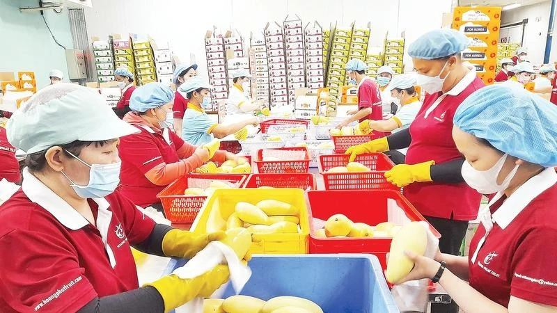
⚡
⚡
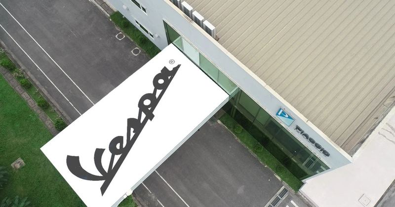
⚡Piaggio Việt Nam với hành trình gần hai thập kỷ trong “hệ sinh thái” FDI
Không chỉ dừng lại ở sản xuất và lắp ráp xe máy, doanh nghiệp Italia này đang từng bước khẳng định vai trò trong nghiên cứu và phát triển sản phẩm, đào tạo nhân lực, phát triển chuỗi cung ứng và kết nối sản xuất khu vực.
⚡
[Video] Tiêu điểm 25/10: Chiến lược bảo vệ lãnh thổ của Lục quân Mỹ trong giai đoạn mới
Lục quân Mỹ trong khuôn khổ tác chiến định hướng How the Army Fights công bố vào tháng 10/2026 đã đặt trọng tâm mới vào việc bảo vệ hậu phương, chuỗi cung ứng và hệ thống giao thông trong nước là yếu tố sống còn để đảm b
🔥
🔥
Iran tuyên bố bắn hạ máy bay không người lái Mỹ sau lời cảnh báo của Tổng thống Trump
(Ảnh: Bộ Tư lệnh Trung tâm Mỹ) Hãng thông tấn Tasnim đưa tin, chiếc máy bay không người lái bị bắn hạ là loại LUCAS do Mỹ phát triển. Thông tin này được đưa ra trong bối cảnh xuất hiện mối lo ngại về nguy cơ tái diễn xun
🔥
🔥
Cập nhật BCTC quý 3/2026 ngày 25/10: Chứng khoán lao dốc, ngành thép đổi chiều, nhiệt điện bứt tốc
TIN MỚI Lợi nhuận ngành ngân hàng nhìn chung duy trì đà tăng trưởng, với một số ngân hàng ghi nhận mức lãi lớn. Phần lớn công ty chứng khoán ghi nhận lợi nhuận trước thuế giảm hoặc lỗ tăng so với quý 3/2025. Kết quả kinh
⚡
⚡
⚡
⚡
Vietjet khai trương đường bay thẳng Hà Nội-Đài Nam (Đài Loan, Trung Quốc)
Lễ khai trương diễn ra tại sân bay Đài Nam với sự tham dự của đại diện lãnh đạo các cơ quan liên quan. Chuyến bay đầu tiên VJ1942 từ Hà Nội đã hạ cánh tại Đài Nam vào sáng 25/10 với nghi thức chào đón nồng nhiệt bằng vòi
🔥
🔥
🔥
⚡
⚡
Lính thủy đánh bộ Mỹ bị truy tố vì tội cướp của, giết người tại Nhật Bản
Nghi phạm Devin Jacob Ballard. Ảnh: Kyodo Theo các hãng tin Kyodo và Anadolu, Devin Ballard, 20 tuổi, bị truy tố trong bối cảnh người dân Okinawa ngày càng bất bình trước sự hiện diện của các căn cứ quân sự Mỹ tại địa ph
🔥
🔥
🔥
SHS khẳng định năng lực Ngân hàng Đầu tư quốc tế qua thương vụ trái phiếu 229 triệu SGD của SHB tại Singapore
SHB phát hành 229 triệu SGD trái phiếu tại Singapore, được CGIF bảo lãnh thanh toán. Trong thương vụ này, SHS đảm nhận vai trò Tổ chức Tư vấn và Điều phối trong nước, phối hợp với SMBC Nikko và các đối tác liên quan triể
🔥
🔥
🔥
🔥
⚡
Chứng khoán OCBS không lưu ghi âm 21 giao dịch, bị phạt hơn 342 triệu đồng
Chứng khoán OCBS bị phạt 342,5 triệu đồng vì hai sai phạm - Ảnh: QUANG ĐỊNH Thanh tra Chứng khoán Nhà nước vừa xử phạt Công ty CP Chứng khoán OCBS hơn 342 triệu đồng do không lưu ghi âm 21 giao dịch đặt lệnh qua điện tho
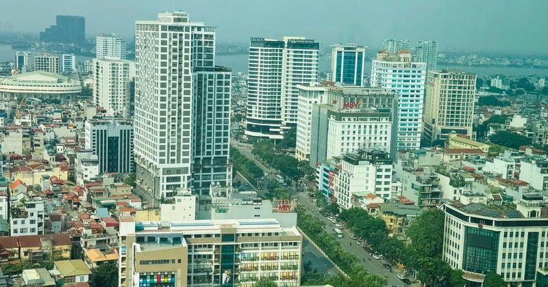
⚡Thị trường bất động sản tại TP. HCM và Hà Nội quý 3/2026: Thanh khoản chịu áp lực lớn từ chi phí vốn
Thị trường bất động sản tại TP. HCM và Hà Nội quý 3/2026: Thanh khoản chịu áp lực lớn từ chi phí vốn Theo Dương Trang | 25/10/2026 20:45 PM | Kinh doanh Theo dõi Cafebiz.vn trên Nhìn lại bức tranh thị trường bất động sản
⚡
🔥
🔥
🔥
🔥
🔥
🔥
🔥
🔥
🔥
🔥
🔥
⚡
⚡
⚡
⚡
⚡
⚡
Hai ngày concert BIGBANG: Du lịch Hà Nội có thể thu tới 800 tỷ đồng, lượt đặt vé máy bay đến Thủ đô tăng 74%
Hai ngày concert BIGBANG: Du lịch Hà Nội có thể thu tới 800 tỷ đồng, lượt đặt vé máy bay đến Thủ đô tăng 74% Theo Bích Ngọc | 25/10/2026 19:00 PM | Sống Theo dõi Cafebiz.vn trên Theo dữ liệu Trip.com, ngoài TP.HCM, Đà Nẵ
 ⚡
⚡
Lãi suất ngày 25/10 tại Agribank, Vietcombank, BIDV, VietinBank, MB, VPBank, Techcombank, Sacombank, HDBank,...
Lãi suất ngày 25/10 tại Agribank, Vietcombank, BIDV, VietinBank, MB, VPBank, Techcombank, Sacombank, HDBank,... Theo Quang Hưng | 25/10/2026 18:44 PM | Kinh doanh Theo dõi Cafebiz.vn trên MBV, PGBank, Sacombank, VCBNeo v
⚡
⚡
Thông báo thu hồi đất thực hiện Dự án Đầu tư xây dựng Khu Công viên công nghệ số và hỗn hợp
Thông báo thu hồi đất thực hiện Dự án Đầu tư xây dựng Khu Công viên công nghệ số và hỗn hợp Theo Đình Đình | 25/10/2026 18:34 PM | Kinh doanh Theo dõi Cafebiz.vn trên UBND phường Phú Diễn phối hợp với Ban Quản lý Dự án Đ
⚡
⚡
🔥
🔥
Đoàn đại biểu Thành phố Đối tác Kinh tế tìm hiểu mô hình khu công nghiệp sinh thái TPHCM
TIN MỚI Ngày 24-10, đoàn đại biểu đại diện các thành phố Osaka (Nhật Bản), Melbourne (Australia), Manila (Philippines) tham quan, làm việc tại Khu công nghiệp chuyên sâu Phú Mỹ 3 (phường Tân Phước, TPHCM), nhằm tìm hiểu
🔥
🔥
🔥
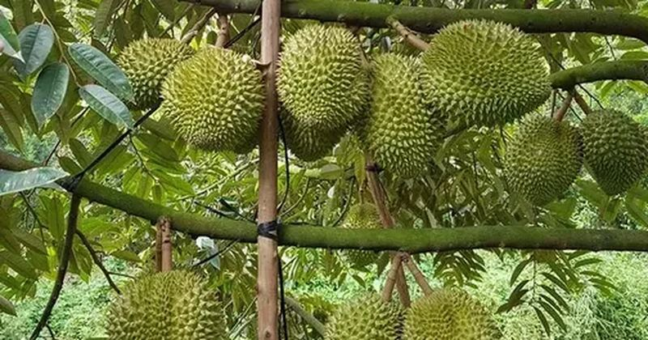
🔥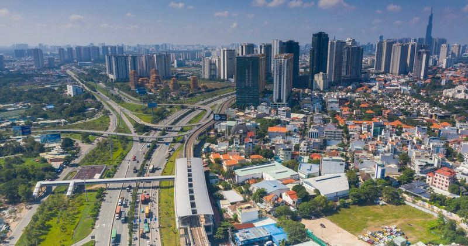
⚡
⚡
Bị Ukraine tấn công sở chỉ huy, Nga tung đòn đáp trả vào tàu hàng trên Biển Đen
(Ảnh: Tass) Bộ Tổng tham mưu Lực lượng Vũ trang Ukraine cho biết, mục tiêu bị nhắm đến là các trạm radar của Nga gần các khu định cư Gostishchevo và Kurgannoye thuộc tỉnh Belgorod (Nga). Ngoài ra, lực lượng Ukraine còn t
⚡
King Coffee của bà Lê Hoàng Diệp Thảo muốn mua lại quán Starbucks ngay trên đất Mỹ
King Coffee của bà Lê Hoàng Diệp Thảo muốn mua lại quán Starbucks ngay trên đất Mỹ Theo Anh Khôi | 25/10/2026 19:16 PM | Kinh doanh Theo dõi Cafebiz.vn trên Sau những động thái mở rộng hoạt động quốc tế, bà Lê Hoàng Diệp
🔥
ColorOS 17 cập nhật sớm cho loạt điện thoại OPPO và OnePlus, có cả Find X9 Ultra
ColorOS 17 cập nhật sớm cho loạt điện thoại OPPO và OnePlus, có cả Find X9 Ultra Theo Phạm Hoàng | 25/10/2026 18:00 PM | Công nghệ Theo dõi Cafebiz.vn trên Bản cập nhật dựa trên Android 17 bắt đầu đến tay người dùng tại
🔥
VETC, ePass thu phí 6.600 đồng/tháng: Bộ Xây dựng đề nghị giá phí linh hoạt, miễn cho xe ít sử dụng
Trạm thu phí Long Phước của cao tốc TP.HCM - Long Thành - Dầu Giây - Ảnh: QUANG ĐỊNH Bộ Xây dựng cho biết tài khoản thu phí trước đây được chuyển đổi thành tài khoản giao thông liên kết với phương tiện thanh toán không
🔥
Hai nam sinh 15 tuổi lạng lách 'chóng mặt' trên đường ở Hà Nội, mẹ bị phạt 9 triệu đồng
XEM CLIP: Chiều 25/10, đại diện Phòng CSGT Công an Hà Nội cho biết, qua nắm tình hình trên không gian mạng, Đội CSGT đường bộ số 3 phát hiện một đoạn video ghi lại cảnh hai học sinh chở nhau trên xe máy điện, cả hai đều
🔥
Công ty của tỷ phú Phạm Nhật Vượng đầu tư dự án logistics gần 40.000 tỷ đồng ở Hà Tĩnh
Công ty của tỷ phú Phạm Nhật Vượng đầu tư dự án logistics gần 40.000 tỷ đồng ở Hà Tĩnh Lệ Chi | 25/10/2026 16:01 PM | Kinh doanh Theo dõi Cafebiz.vn trên Dự án Trung tâm Logistics và Dịch vụ hậu cảng Sơn Dương có tổng vố
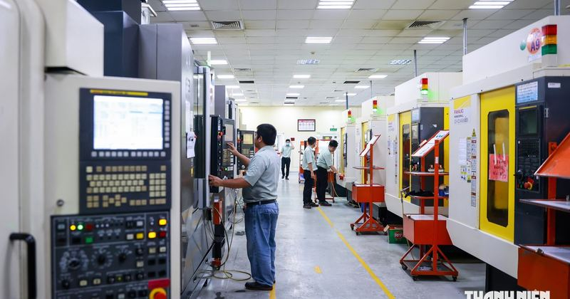
🔥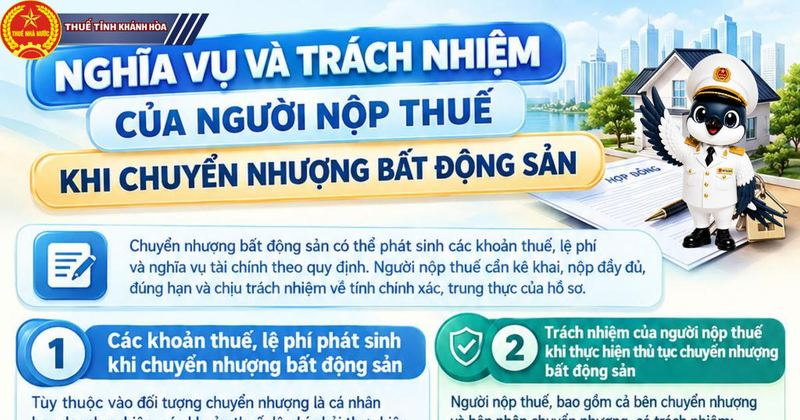
🔥
🔥
 🔥
🔥
🔥
🔥
🔥
🔥
🔥
🔥
Ông Trump bỏ phiếu sớm tại Florida trong cuộc bầu cử giữa nhiệm kỳ tại Mỹ
Ông Trump bỏ phiếu sớm tại Florida trong cuộc bầu cử giữa nhiệm kỳ tại Mỹ Theo Kông Anh/VTC News | 25/10/2026 10:17 AM | Xã hội Theo dõi Cafebiz.vn trên Tổng thống Trump bỏ phiếu sớm tại bang Florida - quê nhà của ông tr
🔥
🔥
🔥
Giá xăng dầu hôm nay 25/10: Thế giới có tuần tăng mạnh, trong nước trái chiều
Giá dầu thế giới hôm nay Giá dầu quốc tế trong tuần này trải qua một tuần biến động mạnh với 2 phiên tăng, 1 phiên giảm, 1 phiên trái chiều và 1 phiên đi ngang. Cụ thể, trong phiên giao dịch đầu tuần này (19/10), giá dầu
🔥
🔥
🔥
🔥
🔥
Hai người bạn thân cùng học Kinh tế Quốc dân 40 năm trước, giờ có tài sản 50.000 tỷ
Hai người bạn thân cùng học Kinh tế Quốc dân 40 năm trước, giờ có tài sản 50.000 tỷ Theo Hà Linh | 25/10/2026 06:13 AM | Kinh doanh Theo dõi Cafebiz.vn trên Sau hơn ba thập kỷ đồng hành, hai người bạn năm nào đều sở hữu
🔥
🔥
🔥
⚡
 ⚡
⚡
⚡
Sam Altman: AI đang tìm ra những lỗ hổng vượt ngoài sức tưởng tượng của hacker
Sam Altman: AI đang tìm ra những lỗ hổng vượt ngoài sức tưởng tượng của hacker Thiên Minh | 25/10/2026 20:04 PM | Công nghệ Theo dõi Cafebiz.vn trên Trong một phát ngôn gây chấn động toàn bộ giới công nghệ, CEO OpenAI Sa
⚡
Ngân hàng rao bán biệt thự Ciputra, xe sang Rolls-Royce, Mercedes,... để thu hồi nợ
Ngân hàng rao bán biệt thự Ciputra, xe sang Rolls-Royce, Mercedes,... để thu hồi nợ Theo Thanh Anh | 25/10/2026 20:00 PM | Kinh doanh Theo dõi Cafebiz.vn trên Thời gian gần đây, nhiều ngân hàng tiếp tục đẩy mạnh xử lý tà
⚡
🔥
Lãi suất ngày 25/10 tại Agribank, Vietcombank, BIDV, VietinBank, MB, VPBank, Techcombank, Sacombank, HDBank,...
TIN MỚI Theo biểu lãi suất huy động niêm yết tại 35 ngân hàng, mặt bằng lãi suất tiết kiệm ngày 25/10/2026 có sự phân hóa giữa các nhà băng và từng kỳ hạn. Một số ngân hàng đang niêm yết lãi suất từ 7%/năm trở lên ở các
🔥
🔥
🔥
Giá vàng miếng, vàng nhẫn chiều 25/10 tại SJC, DOJI, PNJ, Bảo Tín Minh Châu và Phú Quý
TIN MỚI Chiều 25/10, giá vàng miếng tại Công ty SJC được niêm yết ở mức 138,7 – 141,7 triệu đồng/lượng (mua vào – bán ra), không thay đổi so với mức cập nhật gần nhất ngày 24/10. PNJ và Bảo Tín Mạnh Hải cũng giữ nguyên m
🔥
🔥
🔥
🔥
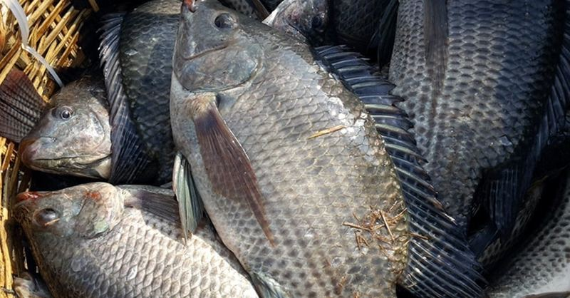
🔥
🔥
Ông Musk: Tiền tuyến Ukraine sẽ sụp đổ ngay lập tức nếu không có Starlink
(Dân trí) - Tỷ phú Mỹ Elon Musk nhấn mạnh vai trò của Starlink đối với quân đội Ukraine, đồng thời cáo buộc Kiev vi phạm điều khoản sử dụng. Nhà sáng lập kiêm Giám đốc điều hành tập đoàn SpaceX, tỷ phú Elon Musk (Ảnh: Re
⚡
[Video] Dự báo thời tiết đêm nay và ngày mai 26/10/2026: Bắc Bộ nhiệt độ giảm nhẹ, Nam Bộ ngày nắng
Tại Bắc Bộ, đêm nay trời nhiều mây, sương mù gia tăng, vùng núi phía bắc có thể xuất hiện mưa rào nhẹ và dông vài nơi, các khu vực khác phổ biến ít mưa. Ngày mai, trời có nắng, cường độ nắng giảm, nền nhiệt có xu hướng h
⚡
⚡
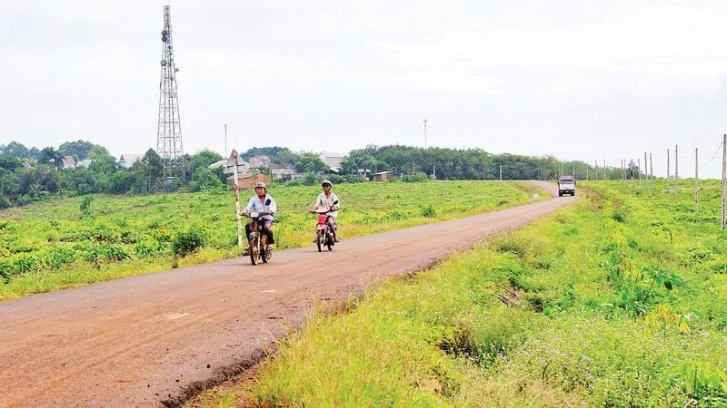
⚡
⚡
Lần đầu tiên trong lịch sử, Việt Nam có tổ hợp thể thao hơn 400ha do tỷ phú Phạm Nhật Vượng đầu tư, sở hữu sân vận động 135.000 chỗ ngồi lớn nhất hành tinh
Lần đầu tiên trong lịch sử, Việt Nam có tổ hợp thể thao hơn 400ha do tỷ phú Phạm Nhật Vượng đầu tư, sở hữu sân vận động 135.000 chỗ ngồi lớn nhất hành tinh Theo Dương Dương | 25/10/2026 20:30 PM | Kinh doanh Theo dõi Caf
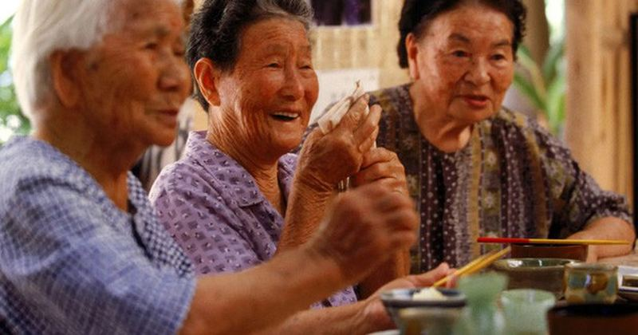
⚡Trò chuyện với 263 người sống thọ nhất thế giới: Bỏ gì thì bỏ nhưng nhất quyết phải duy trì 9 thói quen!
Trò chuyện với 263 người sống thọ nhất thế giới: Bỏ gì thì bỏ nhưng nhất quyết phải duy trì 9 thói quen! Theo Ngọc Ái | 25/10/2026 20:30 PM | Sống Theo dõi Cafebiz.vn trên Từ cuộc trò chuyện trực tiếp với 263 cụ già thọ
⚡
⚡
Cựu viện trưởng khai ‘biến’ người thường thành ‘mất khả năng điều khiển hành vi’
Sáng 29/9, phiên tòa xét xử "bà trùm" Nguyễn Thị Mai Anh cùng 64 bị cáo trong vụ án "Tàng trữ trái phép chất ma túy; tổ chức sử dụng trái phép chất ma túy; đưa hối lộ; nhận hối lộ; môi giới hối lộ; lợi dụng chức vụ, quyề
⚡
 ⚡
⚡
Xã Tam Hưng lấy ý kiến người dân về quy hoạch chi tiết hai dự án nhà ở xã hội
Xã Tam Hưng lấy ý kiến người dân về quy hoạch chi tiết hai dự án nhà ở xã hội Theo Bình Minh | 25/10/2026 19:46 PM | Kinh doanh Theo dõi Cafebiz.vn trên Ngày 23-10, UBND xã Tam Hưng phối hợp với Công ty cổ phần Kinh doan
⚡
⚡
⚡
Nữ diễn viên đình đám quê Hà Nội nổi tiếng sang cả Trung Quốc: 33 tuổi chưa lấy chồng, nói thẳng 1 điều
Nữ diễn viên đình đám quê Hà Nội nổi tiếng sang cả Trung Quốc: 33 tuổi chưa lấy chồng, nói thẳng 1 điều Theo Gia Linh | 25/10/2026 19:32 PM | Sống Theo dõi Cafebiz.vn trên Ở tuổi 33, nữ diễn viên đình đám quê Hà Nội có s
⚡
⚡
Chấn động Hàn Quốc: Cô gái 28 tuổi tử vong sau 514 lần bạo hành suốt 3 tiếng 20 phút bởi gã bạn trai côn đồ
Chấn động Hàn Quốc: Cô gái 28 tuổi tử vong sau 514 lần bạo hành suốt 3 tiếng 20 phút bởi gã bạn trai côn đồ Giả Hủ | 25/10/2026 18:55 PM | Xã hội Theo dõi Cafebiz.vn trên Một phụ nữ 28 tuổi ở Seoul tử vong sau khi bị bạn
⚡
Có 500 triệu gửi BIDV, VietinBank, Vietcombank, Agribank, SHB, BAC A Bank: Lãi tối đa bao nhiêu?
Có 500 triệu gửi BIDV, VietinBank, Vietcombank, Agribank, SHB, BAC A Bank: Lãi tối đa bao nhiêu? Theo Ngọc Linh | 25/10/2026 18:37 PM | Sống Theo dõi Cafebiz.vn trên Khảo sát cho thấy có sự chênh lệch lãi suất ở các ngân
⚡
⚡
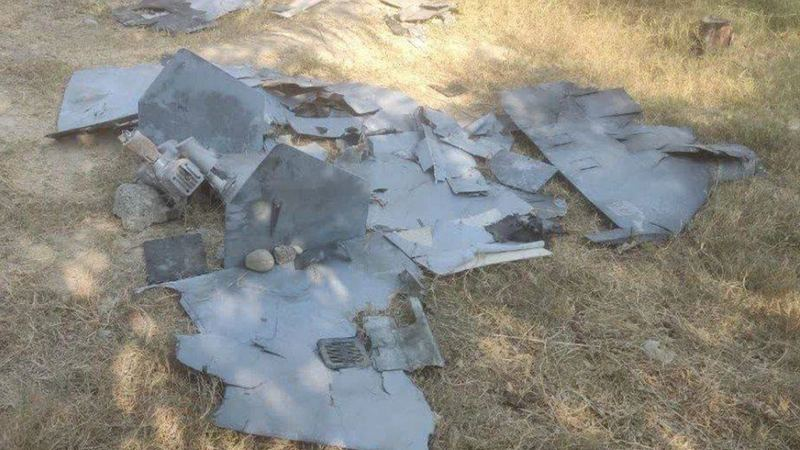
⚡
🔥
🔥
Lịch sử 80 năm đổ vỡ của mô hình thẻ gym dài hạn: Thực chất là cho doanh nghiệp vay tiền không lãi, không ai bảo lãnh
Lịch sử 80 năm đổ vỡ của mô hình thẻ gym dài hạn: Thực chất là cho doanh nghiệp vay tiền không lãi, không ai bảo lãnh Long Văn | 25/10/2026 13:31 PM | Sống Theo dõi Cafebiz.vn trên Doanh nghiệp không còn chỉ bán dịch vụ
🔥
Bose thâu tóm Skullcandy, tham vọng mở rộng thị trường tai nghe với thương hiệu dành cho giới trẻ
Bose thâu tóm Skullcandy, tham vọng mở rộng thị trường tai nghe với thương hiệu dành cho giới trẻ Theo M.Đức | 25/10/2026 11:02 AM | Công nghệ Theo dõi Cafebiz.vn trên Bose đã mua lại Skullcandy, hãng tai nghe Mỹ nổi tiế
🔥
🔥
🔥
Con trai ông Đặng Lê Nguyên Vũ làm phó tổng giám đốc; Novaland cần gần 8.000 tỷ cơ cấu nợ
Con trai cả ông Đặng Lê Nguyên Vũ giữ chức Phó Tổng giám đốc TNI Group Ông Đặng Lê Trung Nguyên, con trai cả của doanh nhân Đặng Lê Nguyên Vũ và Lê Hoàng Diệp Thảo , được bà Thảo giới thiệu đảm nhiệm vị trí Phó Tổng giám
🔥
🔥
Siêu tàu container thế hệ mới lần đầu cập Cảng Quốc tế Tân Cảng - Cái Mép
TIN MỚI YM WAYFINDER là tàu container thế hệ mới có chiều dài gần 365m, trọng tải 159.374 DWT và sức chở lên tới khoảng 15.500 TEU. Tàu được trang bị động cơ nhiên liệu kép hiện đại, sử dụng khí thiên nhiên hóa lỏng (LNG
🔥
🔥
‘Quy tắc cũ’ của vàng đã thay đổi, dự báo sớm trở lại đỉnh cao trong 2 năm tới
Trong gần hai thập kỷ, lãi suất thực là một trong những neo quan trọng nhất của giá vàng: lãi suất thực tăng thường kéo vàng giảm, và ngược lại. Mối tương quan nghịch đó từng được xem là nguyên tắc gần như mặc định của t
🔥
🔥
🔥
Cắt đôi quả chanh rồi "bôi khắp nhà": Những hiệu quả "vàng mười" sẽ khiến bạn bất ngờ
TIN MỚI Thay vì vội vã mua đủ loại chai xịt tẩy rửa hóa chất, bạn hoàn toàn có thể tìm thấy một "trợ thủ" làm sạch cực kỳ an toàn ngay trong tủ lạnh: quả chanh tươi. Việc tiếp xúc thường xuyên với các chất tẩy rửa tổng h
🔥
Dầu Trung Đông xuất khẩu trở lại mức trước chiến tranh, vì sao giá dầu vẫn tăng vọt?
Dầu Trung Đông xuất khẩu trở lại mức trước chiến tranh, vì sao giá dầu vẫn tăng vọt? Theo Bình Minh | 25/10/2026 06:15 AM | Kinh doanh Theo dõi Cafebiz.vn trên Dù lượng dầu xuất khẩu từ Trung Đông đã phục hồi vượt mức tr
 🔥
🔥
⚡
Khánh thành Khu thử nghiệm thiết bị bay không người lái VNU - HTI tại Hòa Lạc
Phó Thủ tướng Hồ Quốc Dũng và các đại biểu thực hiện nghi lễ cắt băng khánh thành "Khu thử nghiệm UAV VNU - HTI". (Ảnh: HTI) Tham dự chương trình có Phó Thủ tướng Chính phủ Hồ Quốc Dũng, Bộ trưởng Giáo dục và Đào tạo Hoà
⚡
⚡
⚡
🔥
🔥
Hiệp định VEFTA: Bước đệm chiến lược tái định vị dòng chảy thương mại và đầu tư
Facebook Twitter Lưu bài viết Bản in Copy link Sự kiện chính thức ký kết Hiệp định Thương mại tự do Việt Nam-Hiệp hội Mậu dịch tự do châu Âu (VEFTA) vào ngày 18/10 vừa qua đánh dấu một cột mốc quan trọng trong bức tranh
 🔥
🔥
🔥
 🔥
🔥
Thông báo thu hồi đất thực hiện Dự án Đầu tư xây dựng Khu Công viên công nghệ số và hỗn hợp
TIN MỚI Theo Công văn số 594/QLDA ban hành ngày 20-10-2026, căn cứ theo quy định tại Điều 85 và Điều 87 Luật Đất đai năm 2024, UBND phường Phú Diễn và Ban Quản lý Dự án Đầu tư Hạ tầng đang tích cực phối hợp cùng các cơ q
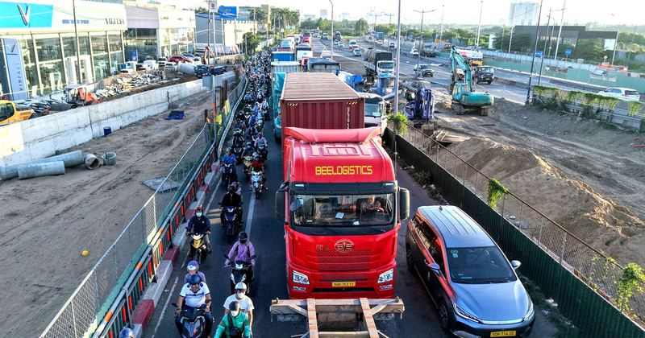
🔥Phường Cát Lái lấy ý kiến quy hoạch làm đường liên cảng 8.700 tỉ đồng, tách xe container khỏi khu dân cư
Đường liên cảng Phú Hữu - Cát Lái dài sẽ nối trực tiếp cảng Cát Lái - Phú Hữu với vành đai 3 và cao tốc TP.HCM - Long Thành - Dầu Giây. Dự án sẽ giải phóng áp lực xe container trên đường Võ Chí Công, mở rộng “cánh cửa” k
🔥
🔥
🔥
Mẹ chồng Trung Quốc chăm con dâu 17 năm, từ sống thực vật đến khi tỉnh lại
(Dân trí) - Một phụ nữ ở miền Đông Trung Quốc đã tận tụy chăm sóc con dâu suốt 17 năm, kể từ khi cô rơi vào trạng thái sống thực vật. Mẹ chồng chăm sóc con dâu suốt 17 năm, kể từ khi cô bị tai nạn và phải sống thực vật (
🔥
🔥
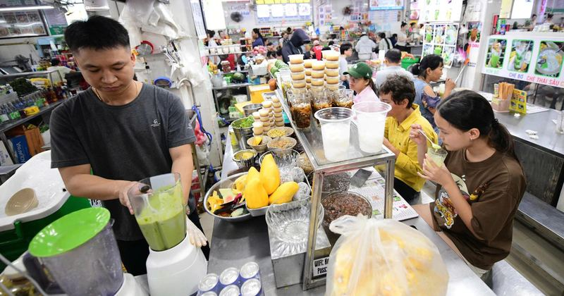
🔥
🔥
Đồng Nai đưa thủ tục hành chính về gần dân: Đến nhà hỗ trợ, trao tay sổ đỏ
2.117 thửa đất chờ làm sổ đỏ lần đầu Ông Nguyễn Thanh Tùng, Chủ tịch UBND xã Bù Đăng, cho biết sau gần 1 tháng thu thập dữ liệu liên quan đến đời sống kinh tế - xã hội, địa phương xác định có 1.309 hộ dân với tổng số 2.1
🔥
🔥
Để AI trở thành 'đắc lực' trong vận hành hồ chứa, chủ động ứng phó mưa lũ
Khi dữ liệu được kết nối, mô hình được kiểm chứng và trách nhiệm vận hành được xác định rõ, AI sẽ trở thành công cụ hỗ trợ thiết thực trong quản lý hồ chứa và điều hành liên hồ AI hỗ trợ điều tiết hồ chứa theo diễn biến
🔥
🔥
Da dầu mụn cứ skincare là bít tắc: Bạn có đang bỏ quên bước quan trọng này?
Tại sao da dầu mụn cứ skincare là bí da, tình trạng mụn ngày càng nghiêm trọng? Da bóng dầu sau vài giờ, lỗ chân lông trông rõ hơn, mụn li ti xuất hiện ở trán và hai bên má… Đây là tình trạng khiến nhiều người sở hữu làn
🔥
🔥
Pacifico Energy Việt Nam đề xuất dự án hơn 15.000 tỷ đồng, Phát Đạt bắt tay Lotte khởi công dự án 60.000 tỷ đồng
Tâm điểm đầu tư tuần qua nổi bật với loạt thông tin EVN khởi công Nhà máy Nhiệt điện LNG Quảng Trạch II hơn 40.123 tỷ đồng; Đạt Phương ký hợp đồng thi công 1.600 tỷ đồng tại sân bay Gia Bình; Phú Tài hợp tác doanh nghiệp
🔥
🔥
🔥
🔥
🔥
Dòng tiền tuần qua: Nhiều ngân hàng có nguy cơ hết room tín dụng, lợi nhuận tăng mạnh
Tuần từ ngày 19 - 25/10/2026, nhiều ngân hàng đã công bố lợi nhuận tăng mạnh. Cùng với việc siết kiểm soát dòng vốn, Ngân hàng Nhà nước tiếp tục đưa ra những yêu cầu mới về lãi suất và an toàn hoạt động. Lợi nhuận nhiều
🔥
🔥
🔥
🔥
🔥
Ông Kim Jong Un đã về nước, truyền thông Triều Tiên viết gì về chuyến thăm Trung Quốc?
Lãnh đạo Triều Tiên Kim Jong Un (phải) bắt tay Chủ tịch Chính hiệp toàn quốc Trung Quốc Vương Hộ Ninh tại thành phố Đan Đông, tỉnh Liêu Ninh, Trung Quốc ngày 24-10-2026 - Ảnh: REUTERS/KCNA Sáng 25-10, Hãng thông tấn trun
🔥
🔥
🔥
Tin tức thế giới 25-10: Ông Trump đi bỏ phiếu sớm; Ông Obama chỉ trích ông Trump nặng nề
Tổng thống Mỹ Donald Trump trả lời báo chí sau khi bỏ phiếu trong cuộc bầu cử giữa nhiệm kỳ tại West Palm Beach, bang Florida, Mỹ ngày 24-10-2026 - Ảnh: AFP Ông Trump đi bỏ phiếu sớm trong cuộc bầu cử giữa nhiệm kỳ tại M
🔥
🔥
🔥
🔥
🔥
🔥
🔥
Lần đầu tiên, Việt Nam sẽ có sân bay nằm ở độ cao hơn 1.200m, mát lạnh quanh năm: Rộng gấp 20 lần sân Mỹ Đình, tổng vốn gần 5.000 tỷ đồng
TIN MỚI Điểm đến nghỉ dưỡng giữa cao nguyên Măng Đen là một xã nằm ở độ cao khoảng 1.200 m so với mực nước biển, thuộc tỉnh Quảng Ngãi. Khu vực này có khí hậu mát mẻ, hệ sinh thái rừng phong phú cùng nhiều hồ, thác nước
🔥
BigBang có thể mang về hàng chục triệu USD lợi nhuận cho công ty chủ quản
BigBang có thể mang về hàng chục triệu USD lợi nhuận cho công ty chủ quản Chuỗi concert kỷ niệm 20 năm của BigBang dự kiến giúp YG Entertainment tăng khoảng 22,6 triệu USD lợi nhuận từ bán vé, vật phẩm và quyền khai thác
🔥
⚡
⚡
⚡
⚡
⚡
⚡
🔥
🔥
🔥
Trước giờ G đêm 2 concert BIGBANG: Phe vé ôm hàng không chịu hạ giá, khán giả kiên nhẫn chờ giá gãy
Trước giờ G đêm 2 concert BIGBANG: Phe vé ôm hàng không chịu hạ giá, khán giả kiên nhẫn chờ giá gãy Pa Dun | 25/10/2026 18:04 PM | Sống Theo dõi Cafebiz.vn trên Chiều 25/10, chỉ vài tiếng trước đêm diễn thứ hai của BIGBA
🔥
TP.HCM sẽ làm đường liên cảng gần 8.800 tỷ đồng, tách container khỏi dân cư
TP.HCM sẽ làm đường liên cảng gần 8.800 tỷ đồng, tách container khỏi dân cư Theo ĐẠI VIỆT | 25/10/2026 17:44 PM | Xã hội Theo dõi Cafebiz.vn trên Tuyến đường liên cảng Cát Lái - Phú Hữu - nút giao HLD dài 5,9 km sẽ tách
🔥
🔥
 🔥
🔥
🔥
🔥
🔥
🔥
Cao tốc Bến Lức-Long Thành: Để lợi thế hạ tầng thành động lực tăng trưởng
Facebook Twitter Lưu bài viết Bản in Copy link Cao tốc Bến Lức-Long Thành mở thêm hành lang giao thông kết nối Đồng bằng sông Cửu Long với Thành phố Hồ Chí Minh và Đông Nam Bộ, tạo cơ hội mở rộng không gian phát triển ch
🔥
🔥
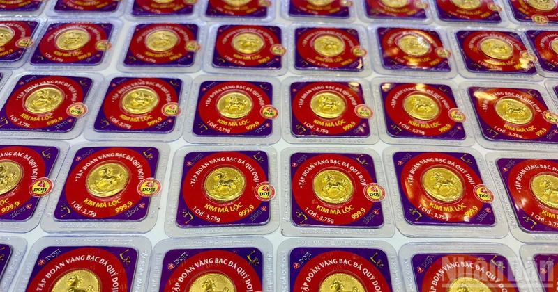
🔥Giá vàng tuần này đồng loạt giảm mạnh, chuyên gia nghi ngờ tiềm năng ngắn hạn của vàng
Giá vàng miếng SJC giảm xuống mức 141,7 triệu đồng/lượng Tại thị trường trong nước, giá vàng tuần này giảm liên tiếp theo diễn biến giá thế giới, giá vàng miếng SJC giảm gần 2 triệu đồng/lượng, mua vào-bán ra ở mức 138,7
🔥
An Giang: Tìm hiểu phong tục đón Tết Raya Aidil Fitri của người Chăm Islam
Sáng 25/10, tại Làng Văn hóa-Du lịch các dân tộc Việt Nam (xã Đoài Phương, Hà Nội), du khách có dịp tìm hiểu Tết Raya Aidil Fitri của đồng bào Chăm Islam tỉnh An Giang qua hoạt động tái hiện các nghi lễ, phong tục, tín n
🔥
🔥
🔥
🔥
Việt Nam đề cao vai trò của giáo viên trong ứng dụng AI trong nhà trường
Facebook Twitter Lưu bài viết Bản in Copy link Từ ngày 22-25/10, tại Singapore đã diễn ra Hội nghị Hội đồng Giáo giới ASEAN và Hàn Quốc (ACT+1) lần thứ 40 với chủ đề “Dẫn dắt tương lai của chúng ta: Giáo viên định hướng;
🔥
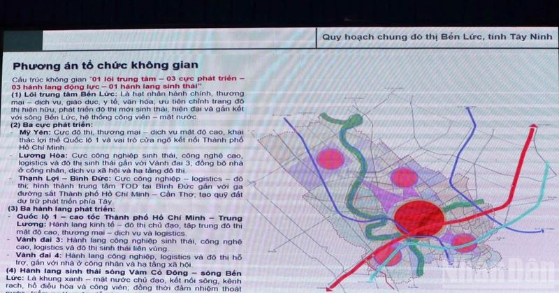
🔥
🔥
🔥
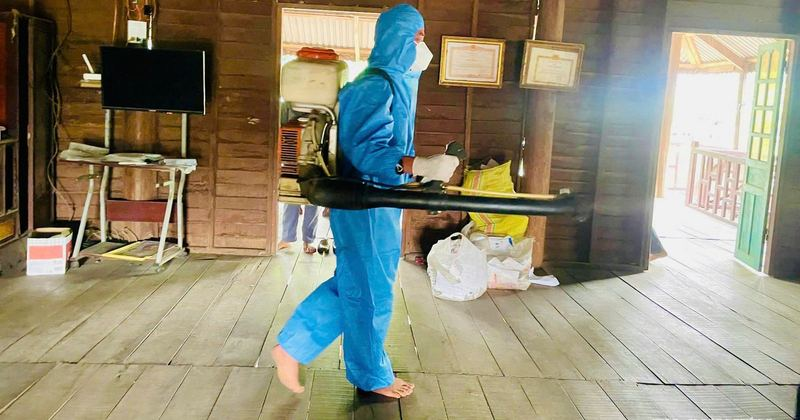
🔥
🔥
🔥
🔥
🔥
🔥
Phát huy thành quả 50 năm xây dựng và phát triển Vùng kinh tế mới Hà Nội tại Lâm Đồng
Ngày 25/10, tại xã Nam Ban Lâm Hà, tỉnh Lâm Đồng và Thành phố Hà Nội tổ chức Lễ kỷ niệm 50 năm xây dựng và phát triển Vùng kinh tế mới Hà Nội tại Lâm Đồng (1976-2026). Tham dự buổi lễ, có các đồng chí lãnh đạo, nguyên lã
🔥
🔥
Đề xuất tạm hoãn xuất cảnh, ngừng cung cấp điện, nước, internet đối với trường hợp không chấp hành quyết định xử phạt hành chính
Đề xuất tạm hoãn xuất cảnh, ngừng cung cấp điện, nước, internet đối với trường hợp không chấp hành quyết định xử phạt hành chính Theo Anh Thơ | 25/10/2026 15:24 PM | Xã hội Theo dõi Cafebiz.vn trên Dự thảo Luật Xử lý vi
🔥
Hải Phòng: 4 người tử vong trong vụ tai nạn giao thông tại đại lộ Võ Văn Kiệt
Facebook Twitter Lưu bài viết Bản in Copy link Khoảng 1 giờ 15 phút, ngày 25/10, đã xảy ra vụ tai nạn giao thông nghiêm trọng tại đại lộ Võ Văn Kiệt, Tổ dân phố Trần Thái Nguyễn, phường Thạch Khôi, thành phố Hải Phòng (t
🔥
Xã Tam Hưng lấy ý kiến người dân về quy hoạch chi tiết hai dự án nhà ở xã hội
TIN MỚI Hai dự án được UBND thành phố Hà Nội chấp thuận chủ trương đầu tư đồng thời giao chủ đầu tư tại Quyết định số 3031/QĐ-UBND ngày 16-6-2026 đối với Dự án nhà ở xã hội Tam Hưng 1 (diện tích 19,74 ha, thuộc địa bàn t
🔥
🔥
Lợi nhuận 9 tháng: VPBank lãi gần 30.000 tỷ đồng, ABBank tăng trưởng 85%
Nhiều ngân hàng công bố kết quả kinh doanh ước tính 9 tháng đầu năm với phần lớn ghi nhận tăng trưởng hai chữ số. Ảnh minh họa Các ngân hàng tiếp tục công bố kết quả kinh doanh quý 3 và 9 tháng đầu năm 2026. Trong nhóm đ
🔥
Bộ Xây dựng: Doanh nghiệp thu phí không dừng chưa làm rõ đầy đủ bản chất khoản phí
TIN MỚI Mặc dù các doanh nghiệp đã thực hiện thông báo chính sách phí, song cách thức thông tin, truyền thông, giải thích chính sách chưa thực sự phù hợp, chưa làm rõ đầy đủ bản chất khoản phí và các quyền lựa chọn
🔥
🔥
🔥
🔥
Tỷ phú Musk thừa nhận đứng sau chuyện hạn chế tốc độ Starlink cho Ukraine
Tỷ phú Elon Musk. (Ảnh: AP) Ông Musk đăng lời thừa nhận lên mạng xã hội, sau khi Tổng thống Ukraine Volodymir Zelensky thông báo quyền truy cập của Ukraine vào các hệ thống Starlink và Starshield đã được khôi phục về tốc
🔥
Khải Hoàn Land chia sẻ định hướng phát triển Khải Hoàn Imperial trong giai đoạn mới
(Dân trí) - Ngày 23/10, tại Sales Gallery Khải Hoàn Imperial, chủ đầu tư Khải Hoàn Land tổ chức chương trình đào tạo chuyên sâu với chủ đề “The Art Of Imperial Living - Nghệ thuật sống xứng tầm”. Chương trình thu hút hàn
🔥
🔥
🔥
🔥
 🔥
🔥
Nghịch lý của tỉnh tăng trưởng cao thứ hai cả nước, hội tụ cả "ông lớn" FDI lẫn "họ nhà Vin"
Nghịch lý của tỉnh tăng trưởng cao thứ hai cả nước, hội tụ cả "ông lớn" FDI lẫn "họ nhà Vin" Theo Hà Anh | 25/10/2026 06:24 AM | Kinh doanh Theo dõi Cafebiz.vn trên Sự hiện diện của các tổ hợp công nghiệp quy mô lớn đã t
🔥
Nghịch lý nhà đầu tư vay nợ chứng khoán hơn 457.000 tỷ đồng dù thanh khoản giảm
(Dân trí) - Dư nợ margin (khoản tiền nhà đầu tư vay) tại 78 công ty chứng khoán chạm đỉnh lịch sử hơn 457.000 tỷ đồng trong bối cảnh thanh khoản trầm lắng, thị giá nhiều cổ phiếu về đáy hơn một năm. Đóng cửa phiên giao d
🔥
🔥
Lãnh đạo tập đoàn ô tô Chery: "Khoảng 90% hãng xe Trung Quốc đang thua lỗ"
(Dân trí) - Lãnh đạo Chery ước tính 90% hãng xe Trung Quốc đang chịu lỗ, đồng thời cảnh báo nguy cơ nhiều công ty sẽ bị xóa sổ do gánh nặng chi phí phát triển sản phẩm quá lớn. Theo CarExpert, giới truyền thông Australia
🔥
Nghịch lý của tỉnh tăng trưởng cao thứ hai cả nước, hội tụ cả "ông lớn" FDI lẫn "họ nhà Vin"
TIN MỚI Nghịch lý: Doanh thu mở rộng, lợi nhuận tăng, nhưng tỷ lệ doanh nghiệp có lãi lại giảm Hà Tĩnh ghi nhận mức tăng trưởng GRDP 12,36% trong 9 tháng đầu năm 2026, đứng thứ hai cả nước. Động lực chủ yếu đến từ công
🔥
Dồn toàn bộ danh mục 227 tỷ mua cổ phiếu KOS vừa giảm sàn 25 phiên liên tiếp, công ty chứng khoán báo lỗ trăm tỷ
KOS&APG: Giá hiện tại Thay đổi Xem hồ sơ doanh nghiệp TIN MỚI Theo báo cáo tài chính quý 3/2026, CTCP Chứng khoán APG ghi nhận doanh thu hoạt động đạt 69 tỷ đồng, giảm 21% so với cùng kỳ năm trước. Trong đó, lãi từ các t
⚡
⚡
Hội thảo quốc tế về cơ quan kiểm toán tối cao trong bối cảnh mới diễn ra ngày 27/10
Facebook Twitter Lưu bài viết Bản in Copy link Ngày 27/10, Kiểm toán Nhà nước Việt Nam sẽ tổ chức Hội thảo quốc tế với chủ đề “Cơ quan kiểm toán tối cao trong bối cảnh mới: Tầm nhìn, Thể chế và Đổi mới,” tại Hà Nội. Hội
⚡
⚡
⚡
⚡
Đại học Quốc gia Hà Nội cần tiên phong giải quyết những bài toán lớn của quốc gia
Phó Thủ tướng Hồ Quốc Dũng phát biểu chỉ đạo tại Chương trình "Hòa Lạc ngày mới 2026" và phát động Kế hoạch 120 ngày phát triển đột phá của Đại học Quốc gia (ĐHQG) Hà Nội. Ảnh: VGP. Ngày 25/10, Phó Thủ tướng Hồ Quốc Dũng
⚡
⚡
⚡
⚡
Dự Luật An ninh dữ liệu: Bộ Công an đề xuất 5 cấp độ rủi ro, bảo vệ xuyên suốt vòng đời
Những người lính bảo vệ vững chắc chủ quyền số quốc gia trên không gian mạng - Ảnh: Cục An ninh mạng Theo chương trình kỳ họp, sáng mai (26-10), Bộ trưởng Bộ Công an sẽ thừa ủy quyền của Thủ tướng Chính phủ trình Quốc hộ
⚡
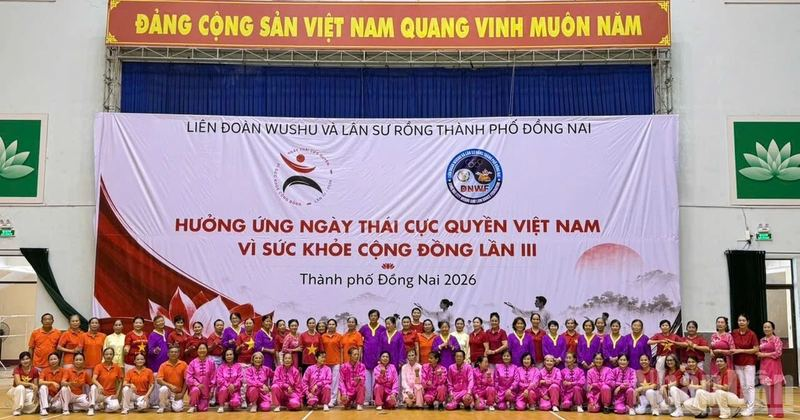
⚡[Ảnh] Sôi nổi "Ngày Thái cực quyền - Vì sức khỏe cộng đồng" lần thứ III tại Hà Nội
Sự kiện quy tụ gần 1.000 vận động viên trực tiếp và kết nối với 11 điểm cầu trực tuyến (gồm Đồng Nai, Thành phố Hồ Chí Minh và nhiều tỉnh, thành phố) với sự tham gia của 630 người cùng đồng diễn, thiết thực hưởng ứng Ngh
⚡
⚡
BMW đền bù gần 19 tỷ đồng, nhân viên tranh nhau nghỉ việc đến sập hệ thống
Tuần trước, BMW đã gửi email tới hàng chục nghìn nhân viên, kèm đường dẫn đến cổng thông tin để họ kiểm tra khoản trợ cấp thôi việc dự kiến được nhận. Tờ Handelsblatt đã tiếp cận một bản thỏa thuận chấm dứt hợp đồng lao
⚡
Quảng Trị: Công an xã Lệ Thủy giúp tìm người đàn ông thất lạc 21 năm đoàn tụ cùng gia đình
Ngày 25/10, đại diện Công an xã Lệ Thủy cho biết, đơn vị vừa nhận được thư cảm ơn của bà Trần Thị Bảy, ở thôn Thượng Giang, xã Lệ Thủy, tỉnh Quảng Trị. Bà Bảy cảm ơn lực lượng Công an xã đã tận tình giúp đỡ gia đình tìm
⚡
Khởi tố Lý Văn Cương SN 1995 - đối tượng lao ô tô lên vỉa hè để chạy công an
Khởi tố Lý Văn Cương SN 1995 - đối tượng lao ô tô lên vỉa hè để chạy công an Theo Trang Anh | 25/10/2026 18:47 PM | Xã hội Theo dõi Cafebiz.vn trên Tổ Cảnh sát giao thông đã tiếp tục ra tín hiệu dừng xe nhưng Lý Văn Cươn
⚡
Quảng Ngãi đặt mục tiêu quy tập 280 hài cốt liệt sĩ, khẩn trương tìm kiếm tại 5 vị trí mộ tập thể
Ngày 25/10, Bộ Chỉ huy Quân sự tỉnh Quảng Ngãi cho biết, Ban Chỉ đạo tìm kiếm, quy tập và xác định danh tính hài cốt liệt sĩ tỉnh Quảng Ngãi đã tiếp nhận 738 thông tin về liệt sĩ, mộ liệt sĩ; tổ chức 14 hội nghị thu thập
⚡
⚡
⚡
Tiếp nối hành trình tri ân, đưa các anh trở về sau những năm tháng dài chờ đợi
Facebook Twitter Lưu bài viết Bản in Copy link Chiến dịch 500 ngày đêm tìm kiếm quy tập và xác định danh tính hài cốt liệt sỹ đang được tiếp nối bằng những việc làm cụ thể. Lễ truy điệu, an táng 731 hài cốt liệt sỹ tại C
⚡
Phát hiện 91 người nước ngoài làm việc không phép trong Khu công nghiệp Đồng Xoài III
Ngày 25.10, Phòng Quản lý xuất nhập cảnh Công an thành phố Đồng Nai, cho biết vừa phát hiện một doanh nghiệp trong Khu công nghiệp Đồng Xoài III (ở phường Bình Phước) có 91 người nước ngoài làm việc không phép . Trước đó
Hải Phòng: Tổng rà soát "lò độ xe" sau vụ va chạm xe máy làm 4 người tử vong
Lãnh đạo Công an TP Hải Phòng họp nhanh với các đơn vị sau vụ tai nạn giao thông đặc biệt nghiêm trọng. Ảnh: CÔNG AN TP HẢI PHÒNG Theo Công an TP Hải Phòng, lúc 1 giờ 15 phút cùng ngày, tại đại lộ Võ Văn Kiệt, đoạn thuộc
🔥
🔥
Hơn 40 triệu lượt hành khách đi xe buýt sau gần 4 tháng triển khai miễn phí vé
Hơn 40 triệu lượt hành khách đi xe buýt sau gần 4 tháng triển khai miễn phí vé Theo Quốc Hùng | 25/10/2026 14:45 PM | Xã hội Theo dõi Cafebiz.vn trên Sau gần 4 tháng TPHCM triển khai miễn phí vé xe buýt trên 134 tuyến, c
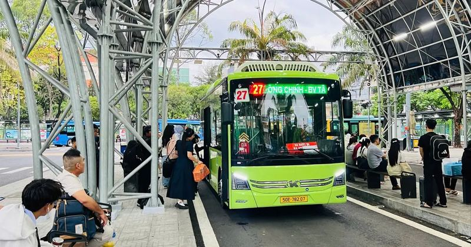
🔥Hơn 40 triệu lượt hành khách đi xe buýt sau gần 4 tháng triển khai miễn phí vé
Ngày 25-10, Giám đốc Trung tâm Quản lý Giao thông công cộng TPHCM Phạm Ngọc Dũng, cho biết sau gần 4 tháng triển khai miễn phí vé xe buýt trên 134 tuyến, các đơn vị vận tải đã vận chuyển hơn 40 triệu lượt hành khách. The
🔥
🔥
🔥
Đối thủ Ford Ranger từ Trung Quốc có gói off-road cực chiến: Nâng cấp từ ngoại hình đến hệ thống treo, bảo hành tới 7 năm
Đối thủ Ford Ranger từ Trung Quốc có gói off-road cực chiến: Nâng cấp từ ngoại hình đến hệ thống treo, bảo hành tới 7 năm Theo Khôi Nguyên | 25/10/2026 12:00 PM | Công nghệ Theo dõi Cafebiz.vn trên Chery hợp tác với hãng
🔥
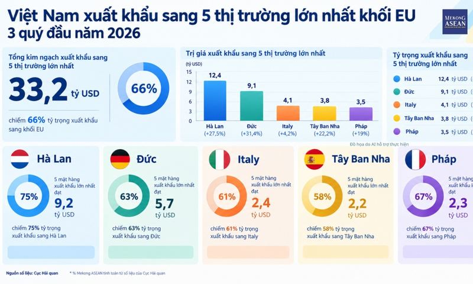
🔥
🔥
 🔥
🔥
Thị trường bất động sản tại TP. HCM và Hà Nội quý 3/2026: Thanh khoản chịu áp lực lớn từ chi phí vốn
TIN MỚI Ảnh minh hoạ: MarketTimes. Tại TP.HCM, thị trường căn hộ trong quý 3/2026 ghi nhận 1.900 căn mở bán mới, dù tăng theo quý nhưng vẫn thấp hơn cùng kỳ năm trước. Phân khúc Hạng A và B chiếm tới khoảng 80% nguồn cun
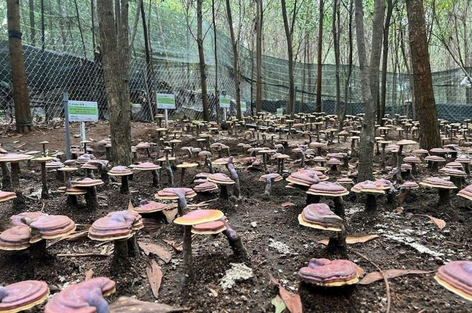
🔥Tây Nguyên khơi thông nguồn lực, nâng tầm nông nghiệp công nghệ cao và dược liệu
Tây Nguyên có lợi thế về đất đai, khí hậu và hệ sinh thái rừng để phát triển nông nghiệp công nghệ cao, dược liệu giá trị lớn. Tuy nhiên, những hạn chế về vùng nguyên liệu, chế biến sâu, liên kết chuỗi và cơ chế đầu tư n
🔥
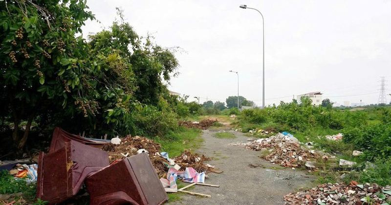
🔥
🔥
🔥
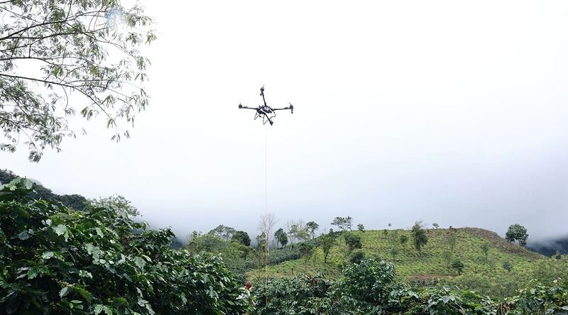
🔥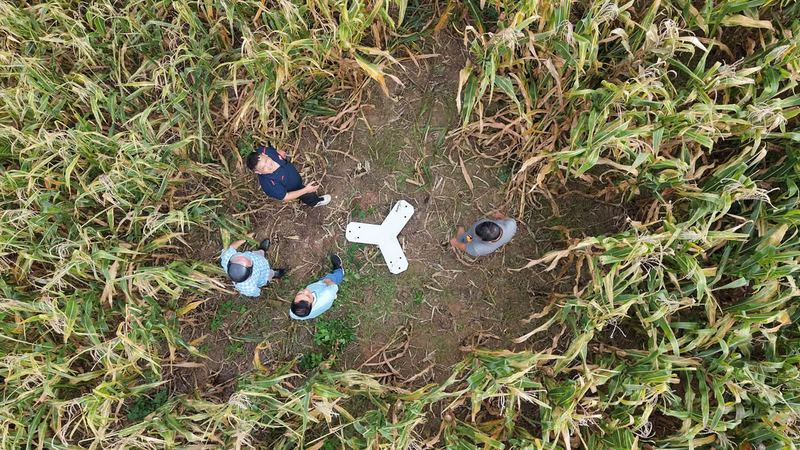
🔥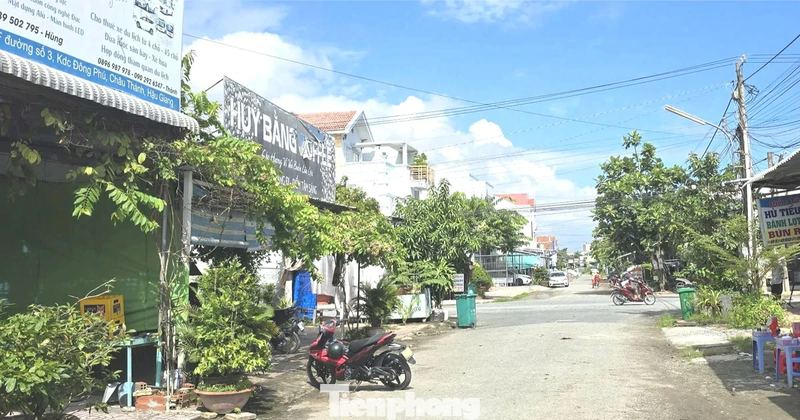
🔥
🔥
Đúng 9h sáng nay, siêu đô thị 456.000 tỷ đồng của ông Phạm Nhật Vượng diễn ra sự kiện chưa từng có
TIN MỚI Nhắc tới những dự án đáng chú ý đang được tập đoàn Vingroup triển khai, không thể không nhắc tới Vinhomes Global Gate Hạ Long, thuộc Khu đô thị phức hợp Hạ Long Xanh. Dự án gắn với hệ sinh thái doanh nghiệp của t
🔥
🔥
🔥
🔥
 ⚡
⚡
⚡
⚡
[Video] Thời sự 24h ngày 25/10/2026: Chính phủ nêu lý do đề xuất phạt vi phạm hành chính đến 3 tỷ đồng
Tóm tắt một số nội dung đáng chú ý có trong bản tin Thời sự 24h ngày 25/10/2026: - Đề xuất nâng mức phạt vi phạm hành chính tối đa lên 3 tỷ đồng với tổ chức và 1,5 tỷ đồng với cá nhân trong dự thảo Luật Xử lý vi phạm hàn
⚡
⚡
⚡
⚡
Chương trình nghệ thuật 'Hào khí Lạc Hồng': Kể huyền sử bằng sân khấu thực cảnh
Facebook Twitter Lưu bài viết Bản in Copy link Nhằm bảo tồn, phát huy các giá trị di sản văn hóa gắn với phát triển du lịch, đồng thời thực hiện chủ trương phát triển các sản phẩm công nghiệp văn hóa độc đáo, Khu di tích
Khoản phí 6.600 đồng/tháng của VETC, Viettel Money: Bộ Xây dựng yêu cầu làm rõ bản chất khoản thu
Khoản phí 6.600 đồng/tháng của VETC, Viettel Money: Bộ Xây dựng yêu cầu làm rõ bản chất khoản thu Nhật Lê | 25/10/2026 16:49 PM | Kinh doanh Theo dõi Cafebiz.vn trên Khoản phí dự thu đã được đề nghị dừng sau phản ứng của
Đại học Quốc gia Hà Nội với sứ mệnh tiên phong làm chủ công nghệ, giải quyết những nhiệm vụ của quốc gia
Chương trình được tổ chức trong năm kỷ niệm 120 năm truyền thống (1906-2026) Đại học Quốc gia Hà Nội, ghi dấu bước chuyển của Hòa Lạc, từ không gian đầu tư xây dựng cơ sở vật chất sang đô thị đại học từng bước vận hành,
🔥
🔥
Nga và Ukraine ngừng bắn cục bộ, Phó Chủ tịch Nghị viện châu Âu dừng tuyệt thực
Tờ Kyiv Independent dẫn lời Thanh tra nhân quyền Ukraine Dmytro Lubinets hôm 24/10 cho biết ông đã thông báo với bà Picierno rằng Nga và Ukraine đạt được thỏa thuận ngừng bắn tạm thời ở Oleshky nhằm tạo điều kiện đưa hàn
🔥
🔥
TPHCM: Khai mạc Hội thi Olympic các môn khoa học Mác - Lênin, tư tưởng Hồ Chí Minh
Hội thi do Ban Tuyên giáo Thành ủy TPHCM, Đảng ủy UBND TPHCM, Thành đoàn TPHCM và Đại học Quốc gia TPHCM phối hợp tổ chức từ ngày 25-10 đến ngày 6-12. Các đại biểu thực hiện nghi thức khai mạc hội thi Nội dung hội thi tậ
🔥
Kỷ niệm 50 năm xây dựng và phát triển Vùng kinh tế mới Hà Nội tại Lâm Đồng
Facebook Twitter Lưu bài viết Bản in Copy link Sáng 25/10, tại xã Nam Ban-Lâm Hà, Ủy ban Nhân dân tỉnh Lâm Đồng phối hợp cùng Ủy ban Nhân dân thành phố Hà Nội tổ chức Lễ kỷ niệm 50 năm xây dựng và phát triển Vùng kinh tế
🔥
🔥
🔥
🔥
Chuyến thăm của Tổng Bí thư, Chủ tịch nước Tô Lâm đến EU và Bỉ: Mở ra không gian hợp tác thực chất
Facebook Twitter Lưu bài viết Bản in Copy link Chuyến thăm chính thức của Tổng Bí thư, Chủ tịch nước Tô Lâm cùng Phu nhân và Đoàn đại biểu cấp cao Việt Nam (từ ngày 21-24/10) đến Liên minh châu Âu (EU) và Vương quốc Bỉ đ
🔥
🔥
🔥
🔥
Thông tin mới vụ bé trai 6 tuổi bị chấn thương sọ não khi gửi tại cơ sở can thiệp
Thông tin mới vụ bé trai 6 tuổi bị chấn thương sọ não khi gửi tại cơ sở can thiệp Theo Thanh Phong | 25/10/2026 11:10 AM | Xã hội Theo dõi Cafebiz.vn trên Kết luận giám định cho thấy, tỷ lệ phần trăm tổn thương cơ thể ch
🔥
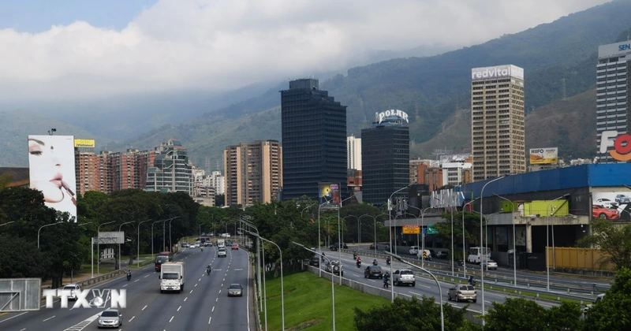
🔥
🔥
Danh thắng đầm Ô Loan: Vang danh sò huyết, cua huỳnh đế và giai thoại một vị vua
Nhớ mùa sò huyết, cua huỳnh đế đầm Ô Loan Với người dân sống quanh đầm Ô Loan , sò huyết và cua huỳnh đế không chỉ là đặc sản mà còn gợi nhớ thời nguồn lợi thủy sản dồi dào, khi ngư dân chỉ cần vài giờ trên đầm đã có thể
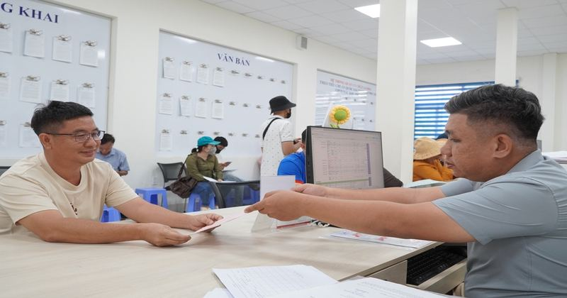
🔥
🔥
🔥
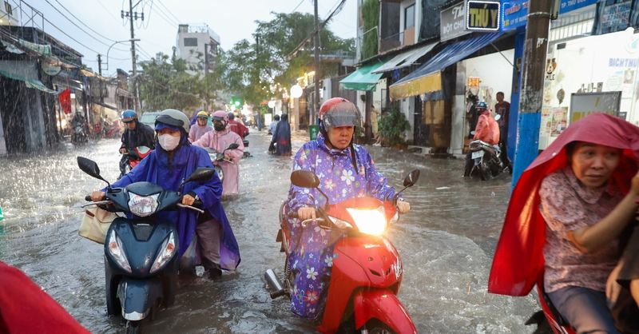
🔥Hai đợt không khí lạnh sắp tăng cường, Nam Bộ đối mặt ngập sâu diện rộng
Không khí lạnh kết hợp nhiễu động gây mưa diện rộng Đài Khí tượng thủy văn Nam Bộ cảnh báo, từ ngày 25/10 đến 3/11, thời tiết khu vực chịu tác động chủ yếu của khối không khí lạnh từ phía Bắc tăng cường lệch Đông, kết hợ
🔥
Đề xuất tạm hoãn xuất cảnh, ngừng cung cấp điện, nước, internet đối với trường hợp không chấp hành quyết định xử phạt hành chính
Đề xuất tạm hoãn xuất cảnh, ngừng cung cấp điện, nước, internet đối với trường hợp không chấp hành quyết định xử phạt hành chính Ngày 08/9/2026, Chính phủ có Tờ trình số 665/TTr-CP trình Quốc hội về dự án Luật Xử lý vi p
🔥
🔥
🔥
🔥
Đường sắt tốc độ cao Bắc - Nam cần 700-900 cán bộ quản lý, chủ đầu tư cho biết kỹ sư giỏi công nghệ vẫn là hàng hiếm
TIN MỚI Ông Lê Hữu Cầu - Trưởng phòng Khoa học công nghệ, Ban Quản lý dự án Thăng Long. Ảnh: Báo Xây dựng. Chia sẻ tại tọa đàm "Hóa giải nguy cơ thiếu hụt nhân lực ngành Xây dựng: Cần cái "bắt tay" của "ba nhà" mới đây,
🔥
Ngày 25/10, gửi 100 triệu đồng 3 tháng tại Sacombank, SHB, HDBank, MB, VPBank, Techcombank và ACB nhận bao nhiêu tiền lãi?
TIN MỚI Gửi tại quầy: Lãi suất cao nhất 4,65%/năm Theo biểu lãi suất VPBank đang áp dụng, ngân hàng niêm yết lãi suất tiền gửi tại quầy kỳ hạn 3 tháng ở mức 4,65%/năm đối với khoản tiền gửi dưới 1 tỷ đồng. Với 100 triệu
🔥
Cà Mau cần hơn 880 tỷ đồng di dời hơn 3.200 hộ dân vùng thiên tai, đất rừng
TIN MỚI Tái thiết nơi ở mới cho hơn 3.200 hộ dân UBND tỉnh Cà Mau cho biết, hiện tỉnh có trên 200 km bờ biển và gần 1.100 km bờ sông bị sạt lở, có nguy cơ sạt lở. Thực trạng này đặt ra yêu cầu cấp thiết phải di dời người
🔥
Đường sắt tốc độ cao Bắc - Nam cần 700-900 cán bộ quản lý, chủ đầu tư cho biết kỹ sư giỏi công nghệ vẫn là hàng hiếm
Đường sắt tốc độ cao Bắc - Nam cần 700-900 cán bộ quản lý, chủ đầu tư cho biết kỹ sư giỏi công nghệ vẫn là hàng hiếm Phan Trang | 25/10/2026 08:30 AM | Kinh doanh Theo dõi Cafebiz.vn trên Trong bối cảnh các dự án lớn như
 🔥
🔥
🔥
🔥
🔥
🔥
Một sân bay mở đường băng mới ngay trên biển, diện tích tương đương 900 sân bóng đá: Xi măng được bơm xuống đáy biển để tạo 360.000 cột chống, tiêu tốn gần 500.000 tỷ đồng
TIN MỚI Cảng Hàng không Quốc tế Hồng Kông (Trung Quốc) là một trong những sân bay quốc tế lớn và quan trọng nhất châu Á. Sân bay được xây dựng trên đảo nhân tạo Chek Lap Kok, gần đảo Đại Tự Sơn. Công trình hình thành từ
🔥
🔥
🔥
🔥
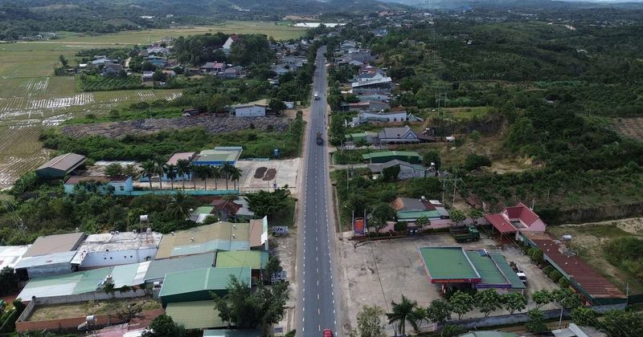
🔥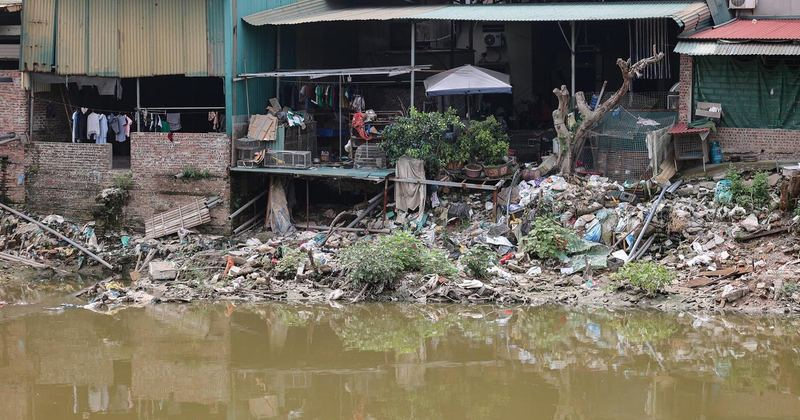
🔥
🔥
Đàm Thu Trang đi concert BIGBANG, Cường Đô La bình luận một câu hiểu ngay tình hình hôn nhân
TIN MỚI Mới đây, Đàm Thu Trang chia sẻ hình ảnh check-in tại Hà Nội, xác nhận đã có mặt ở sân vận động Mỹ Đình để tham dự concert BIGBANG 2026-2027 WORLD TOUR XX : COSMOS. Đồng hành cùng cô trong chuyến đi lần này là ngư
🔥
🔥
🔥
🔥
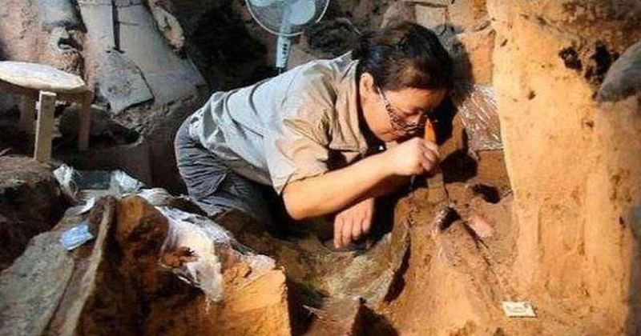
🔥Bí ẩn nữ chiến thần nhà Thương và chiếc rìu đồng lớn trong cổ mộ ngàn năm
(Dân trí) - Hơn 3.000 năm sau khi chìm sâu dưới lòng đất, một chiếc rìu đồng nặng 9kg đã bất ngờ hé lộ danh tính nữ chiến thần từng làm nên những chiến công bí ẩn của nhà Thương. Năm 1976, cuộc khai quật tại làng Tiểu Đồ
🔥
🔥
Bức thư của con trai Tổng giám đốc Trung Thủy Group được hoa hậu Đặng Thu Thảo chia sẻ
Bức thư của con trai Tổng giám đốc Trung Thủy Group được hoa hậu Đặng Thu Thảo chia sẻ Theo Trần Hà, | 25/10/2026 07:34 AM | Sống Theo dõi Cafebiz.vn trên Điều gì mà bây giờ Đặng Thu Thảo mới chia sẻ. Mới đây, Hoa hậu Đặ
🔥
🔥
🔥
'Tháng Mười đen tối': Báo động về kỷ nguyên tấn công mạng được tiếp sức bởi AI
Sau vụ phát hiện lỗ hổng nghiêm trọng trong ngôn ngữ lập trình PHP vào tuần này, các lãnh đạo hàng đầu trong ngành an ninh mạng đang đưa ra những cảnh báo khẩn cấp. Họ dự báo trí tuệ nhân tạo (AI) sẽ tiếp tục bóc trần th
🔥
Cà Mau cần hơn 880 tỷ đồng di dời hơn 3.200 hộ dân vùng thiên tai, đất rừng
Tái thiết nơi ở mới cho hơn 3.200 hộ dân UBND tỉnh Cà Mau cho biết, hiện tỉnh có trên 200 km bờ biển và gần 1.100 km bờ sông bị sạt lở, có nguy cơ sạt lở. Thực trạng này đặt ra yêu cầu cấp thiết phải di dời người dân khỏ
🔥
Độc quyền ảnh BIGBANG trở về khách sạn sau D-1 siêu concert, nhìn bóng lưng mà thao thức cả đêm
TIN MỚI Tối 24/10, BIGBANG đã chính thức khai màn D-1 concert trong khuôn khổ BIGBANG 2026-2027 WORLD TOUR [XX : COSMOS] tại SVĐ Mỹ Đình. Trong đêm diễn đầu tiên tại Hà Nội, G-Dragon, Taeyang và Daesung đã mang đến bữa t
🔥
🔥
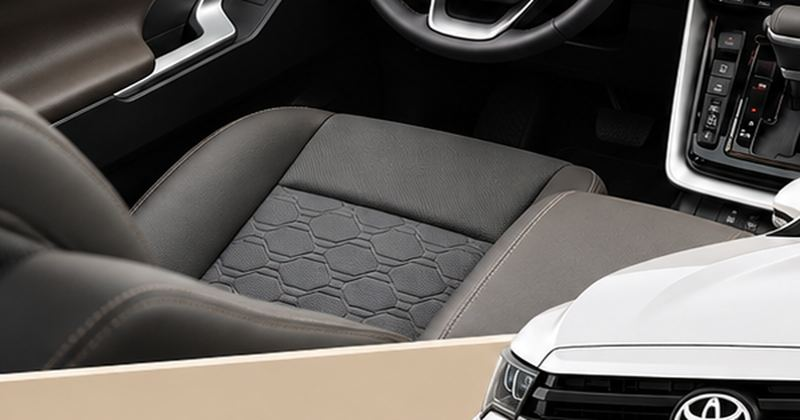
🔥Xem trước Toyota Innova Cross mới sắp ra mắt tháng sau: Mặt trước thay đổi lớn, màn hình lớn hơn, vẫn đủ tùy chọn xăng, hybrid
TIN MỚI Toyota chưa công bố ngày ra mắt chính thức của Innova Cross bản nâng cấp. Một số dự báo tại Ấn Độ cho rằng xe có thể trình làng tại quốc gia này sớm nhất vào đầu tháng 11/2026, trong khi những dự đoán khác đưa ra
🔥
🔥
Cô gái chuyển gần 2 triệu giúp chàng trai nghèo, 8 năm sau nhận món quà bất ngờ
Ngày 17/10, Chu Học Vĩ, 41 tuổi, chia sẻ trên mạng xã hội về cuộc hội ngộ đặc biệt giữa chị với anh Vương Thư Minh, chàng trai quê Yên Đài, tỉnh Sơn Đông, sinh năm 2000. Phong bao lì xì anh âm thầm để lại khiến chị xúc đ
🔥
Con gái tai nạn nặng, gia đình vay hơn 300 triệu vẫn không đủ phí điều trị
Tỉnh lại sau hôn mê, cô gái trẻ vẫn chưa nhận ra người thân Hơn một tháng qua, cô gái Nguyễn Phương Linh (ở xã Tiến Thắng, TP Hà Nội) đã trải qua bao cuộc cấp cứu, hiện mắt của Linh đã mở. Thế nhưng, điều khiến trái tim
🔥
🔥
Hội nghị Công ước khung của Liên hợp quốc về biến đổi khí hậu (COP31): Thước đo tinh thần trách nhiệm
Chỉ còn khoảng hai tuần nữa Hội nghị lần thứ 31 các bên tham gia Công ước khung của Liên hợp quốc về biến đổi khí hậu (COP31) diễn ra ở Thổ Nhĩ Kỳ, trong bối cảnh còn ngổn ngang những câu hỏi chưa có lời giải về cơ chế t
🔥
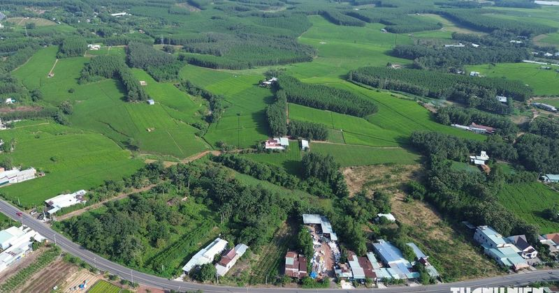
🔥
🔥
🔥
🔥
🔥
🔥
🔥
V.League 2026-2027: Nam Định thắng đậm Đồng Nai, Hà Tĩnh hạ Hải Phòng phút 89
TIN MỚI Trước đối thủ được đánh giá yếu hơn, Thép xanh Nam Định chơi bùng nổ. Ảnh: Quang Dương Nam Định bùng nổ, Đồng Nai tiếp tục gặp khó Không có sự phục vụ của tiền đạo Nguyễn Công Phượng, Đồng Nai vẫn phải đối mặt vớ
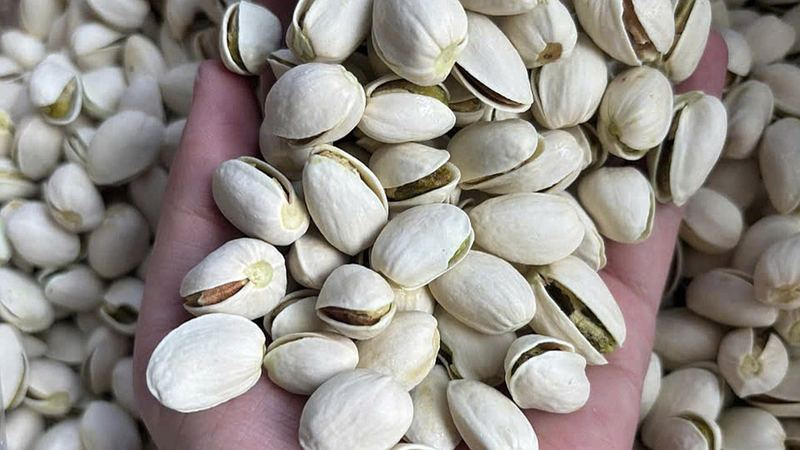
🔥
🔥
🔥
🔥
Video UAV Nga bắn nổ pháo tự hành CAESAR của Ukraine ở tiền tuyến Donetsk
Theo Zvezda, Bộ Quốc phòng Nga ngày 23/10 đã công bố đoạn video ghi lại cảnh quân đội nước này triển khai UAV cảm tử để tập kích một pháo tự hành CAESAR của Ukraine ở gần khu định cư Zelenoye, vùng Donetsk. "Kíp điều khi
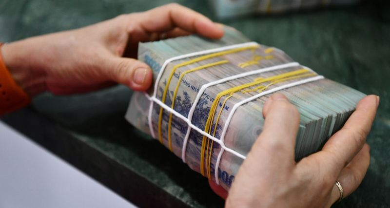
🔥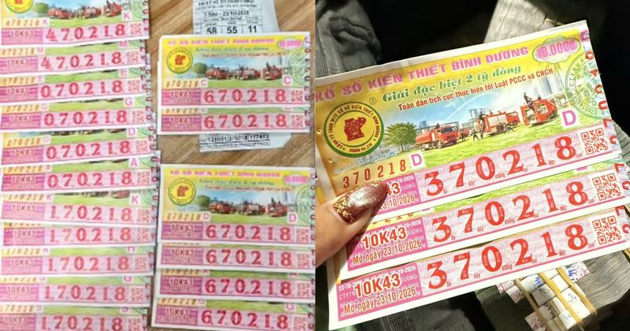
🔥
🔥
🔥
Mặt bằng đã bàn giao nhưng 7 "siêu cầu" vượt sông Hồng vẫn chưa thể thi công đồng bộ: Điểm nghẽn nằm ở đâu?
TIN MỚI Theo Ban Quản lý dự án đầu tư xây dựng công trình giao thông TP. Hà Nội (Ban Giao thông), 7 dự án cầu gồm Tứ Liên, Ngọc Hồi, Trần Hưng Đạo, Thượng Cát, Vân Phúc, Hồng Hà và Mễ Sở đang được triển khai thi công. Nh
🔥
🔥
🔥
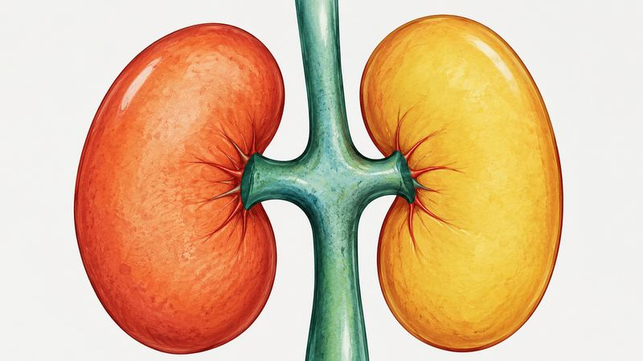
🔥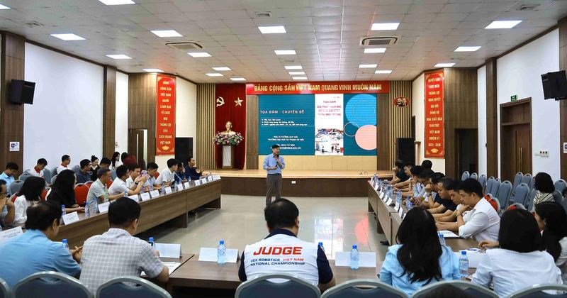
⚡
⚡
⚡
[Ảnh] Thủ tướng Cộng hòa Ba Lan Donald Tusk đến Hà Nội, thăm chính thức Việt Nam
Bộ trưởng Khoa học và Công nghệ Vũ Hải Quân đón Thủ tướng Cộng hòa Ba Lan Donald Tusk tại Sân bay quốc tế Nội Bài (Hà Nội). (Ảnh: TTXVN) Lễ đón Thủ tướng Cộng hòa Ba Lan Donald Tusk tại Sân bay quốc tế Nội Bài (Hà Nội).
⚡
⚡
Vingroup đề xuất nạo vét sông Hồng, sông Đà, TP Hà Nội yêu cầu làm rõ chủng loại vật liệu dự kiến thu hồi
Vingroup đề xuất nạo vét sông Hồng, sông Đà, TP Hà Nội yêu cầu làm rõ chủng loại vật liệu dự kiến thu hồi Theo Minh Hằng | 25/10/2026 19:30 PM | Kinh doanh Theo dõi Cafebiz.vn trên Đây là dự án chưa từng có tiền lệ tại s
⚡
Lý do đề xuất nâng mức phạt hành chính tối đa lên 1,5 tỉ đồng với cá nhân, thêm biện pháp cưỡng chế
Công an kiểm tra tang vật vụ án buôn bán thực phẩm chức năng giả - Ảnh: Công an tỉnh Thanh Hóa Theo chương trình kỳ họp, sáng mai (26-10) Quốc hội sẽ nghe Bộ trưởng Bộ Công an thừa ủy quyền của Thủ tướng trình bày tờ trì
Ngọn núi cao hơn 40m giữa lòng đô thị được đề xuất san phẳng với kinh phí 500 tỷ đồng có gì đặc biệt?
Ngọn núi cao hơn 40m giữa lòng đô thị được đề xuất san phẳng với kinh phí 500 tỷ đồng có gì đặc biệt? Theo Giáng Tiên | 25/10/2026 18:00 PM | Sống Theo dõi Cafebiz.vn trên Nơi này đang thu hút sự quan tâm của đông đảo ng
Lâm Đồng: Trang bị kiến thức bảo vệ thanh thiếu niên trên môi trường mạng
Đây là hoạt động thuộc kế hoạch của Tiểu ban Chỉ đạo An ninh mạng tỉnh Lâm Đồng về triển khai Chiến dịch “ không một mình ” trên địa bàn năm 2026, với chủ đề “Phòng, chống xâm hại trực tuyến đối với trẻ em, thanh thiếu n

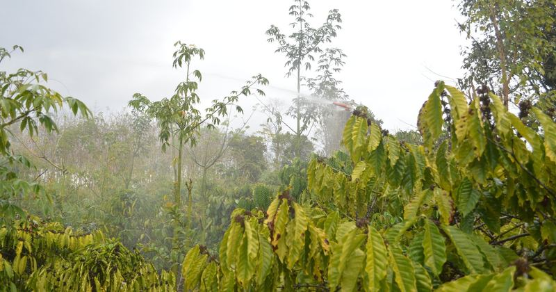
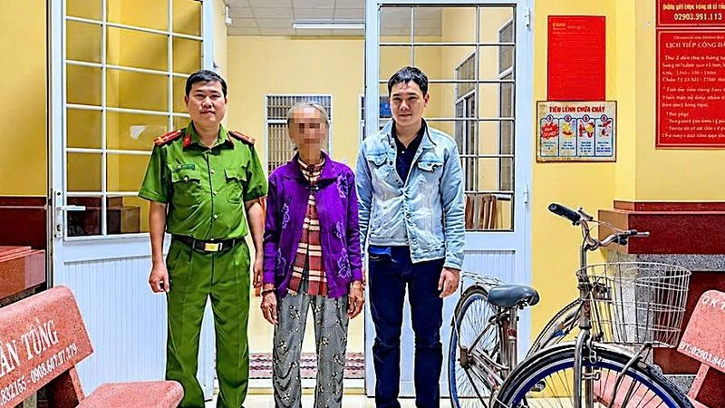
Chủ tịch Quốc hội Trần Thanh Mẫn kiểm tra tiến độ hơn 20 công trình APEC 2027
TIN MỚI Chủ tịch Quốc hội Trần Thanh Mẫn đã kiểm tra Dự án đầu tư mở rộng Cảng hàng không quốc tế Phú Quốc; Dự án đường tỉnh ĐT.975 và Dự án Tuyến tàu điện đô thị đoạn 1; Dự án Đại lộ APEC và Dự án Trung tâm Hội nghị APE
Đà Nẵng có thêm khu tái định cư 127 tỷ đồng phục vụ đường sắt tốc độ cao trục Bắc – Nam
TIN MỚI UBND TP Đà Nẵng ban hành Quyết định số 4878 ngày 23/10/2026 phê duyệt Dự án thành phần 9: Khu tái định cư phục vụ Dự án đường sắt tốc độ cao trên trục Bắc – Nam trên địa bàn phường Điện Bàn Bắc (xã Điện Tiến cũ).
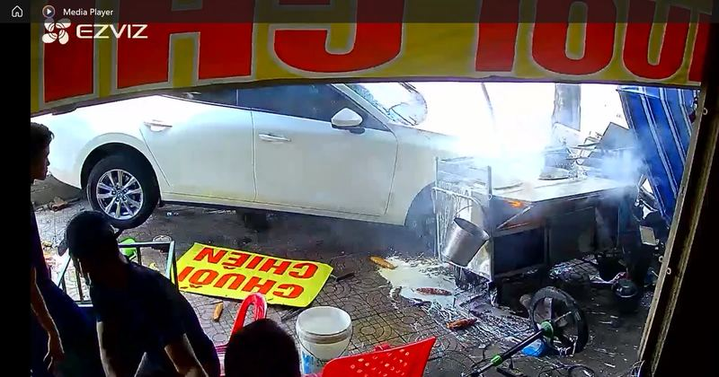
Nhận định Ninh Bình FC vs Công an TPHCM, 18h00 ngày 25/10: Giáo sắc đấu khiên chắc
Nhận định trước trận đấu Ninh Bình FC vs Công an TPHCM Đây là màn phô diễn sức mạnh của hai thế lực đang vươn mình mạnh mẽ nhất trên bản đồ bóng đá Việt Nam đương đại. Từ vị thế của những cái tên khiêm tốn, cả hai đã vụt
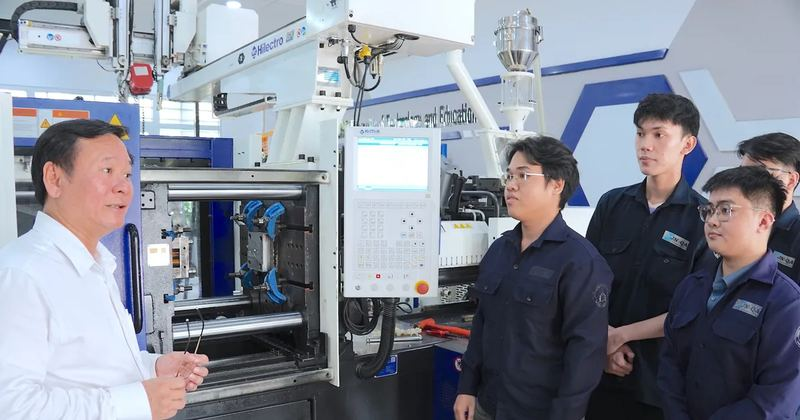
[Video] Cục Hàng không đề nghị 6 hãng khôi phục, mở mới đường bay nội địa
Theo Cục Hàng không Việt Nam, trong bối cảnh hệ thống cảng hàng không trên cả nước đang được đầu tư, nâng cấp và mở rộng, vận tải hàng không tiếp tục giữ vai trò quan trọng trong kết nối vùng, thúc đẩy giao thương, phát
⚡
Hàng nghìn người biểu tình phản đối thủ tướng Israel trước bầu cử quốc hội
Theo đài RT, quảng trường bên ngoài Bảo tàng Nghệ thuật tại thành phố lớn nhất Israel chật kín người biểu tình vào tối 24/10. Những người biểu tình mang theo quốc kỳ và các biểu ngữ với khẩu hiệu như “Thay đổi sẽ đến”, “
⚡
“Bí mật tuổi chúng mình” 2026 khép lại với buổi tư vấn tại Trường THPT Nguyễn Thái Bình sáng 26-10
Ca sĩ Đặng Hồng Hải trong chương trình "Bí mật tuổi chúng mình" tại Trường Trung học Thực hành - Đại học Sư phạm TPHCM Sáng 26-10, chương trình “Bí mật tuổi chúng mình” năm 2026 sẽ khép lại với buổi tư vấn học đường tại
⚡
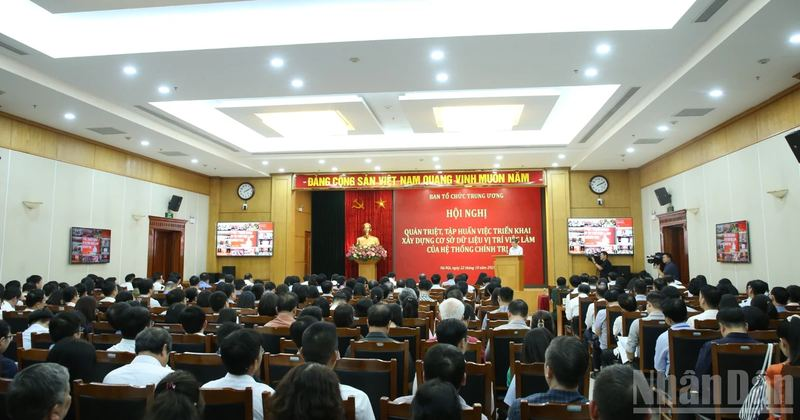
⚡Hướng dẫn hoàn thiện vị trí việc làm và xây dựng phương án biên chế trong hệ thống chính trị
Thực hiện Kết luận số 107-KL/TW, ngày 17/10/2026 của Bộ Chính trị về hoàn thiện hệ thống vị trí việc làm trong hệ thống chính trị gắn với xây dựng đội ngũ cán bộ và quản lý biên chế, trên cơ sở trao đổi, thống nhất với B
⚡
⚡
⚡
Phương án sắp xếp, nâng cấp chợ Bến Thành, Tân Định, Đa Kao... có gì 'hot'?
Du khách nước ngoài mua sắm tại chợ Bến Thành - Ảnh: N.TRÍ Là ngôi chợ biểu tượng của TP.HCM với lượng khách đến cả hàng nghìn lượt mỗi ngày, chợ Bến Thành tới đây sẽ tiếp tục được sắp xếp, nâng cấp. Trao đổi với Tuổi Tr
 ⚡
⚡
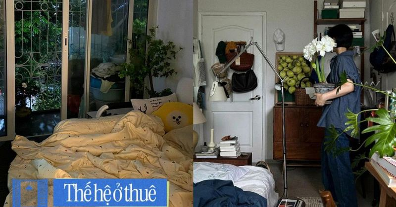
⚡Lương 15 triệu/tháng, cặp đôi ở Hà Nội chọn thuê nhà 9 triệu thay vì căn 6,5 triệu: Đằng sau là một phép tính khác
Lương 15 triệu/tháng, cặp đôi ở Hà Nội chọn thuê nhà 9 triệu thay vì căn 6,5 triệu: Đằng sau là một phép tính khác Theo Hải My | 25/10/2026 20:05 PM | Sống Theo dõi Cafebiz.vn trên Thuê nhà dài hạn không chỉ là tìm được
⚡
⚡
Thành phố đáng sống nhất Việt Nam quy hoạch đô thị Bà Nà rộng hơn 13.640ha, đón 10 triệu lượt khách du lịch mỗi năm vào 2050
Thành phố đáng sống nhất Việt Nam quy hoạch đô thị Bà Nà rộng hơn 13.640ha, đón 10 triệu lượt khách du lịch mỗi năm vào 2050 Theo Dương Dương | 25/10/2026 19:27 PM | Kinh doanh Theo dõi Cafebiz.vn trên Đô thị Bà Nà được
⚡
Nghệ sĩ Việt vướng loạt thị phi, thay vợ như thay áo, U50 không mặn mà yêu đương
Nghệ sĩ Việt vướng loạt thị phi, thay vợ như thay áo, U50 không mặn mà yêu đương Theo Minh Ngọc | 25/10/2026 19:27 PM | Sống Theo dõi Cafebiz.vn trên Từng là gương mặt hài quen thuộc trên sóng truyền hình, diễn viên này
⚡
Việt Nam có gia đình tỷ phú với 8 người con, cha từng là thanh tra tài chính, con út SN 1999 nay đã là Phó tổng giám đốc: Làm dịch vụ sân bay vừa lãi hơn 539 tỷ đồng sau 9 tháng
Việt Nam có gia đình tỷ phú với 8 người con, cha từng là thanh tra tài chính, con út SN 1999 nay đã là Phó tổng giám đốc: Làm dịch vụ sân bay vừa lãi hơn 539 tỷ đồng sau 9 tháng Theo Thu Phương | 25/10/2026 19:23 PM | Số
⚡
⚡
⚡
⚡
Không đình công, không biểu ngữ: Tài xế Uber Eats “hack” thuật toán bằng cách cùng nhau nói không với giá cước "rẻ mạt"
Không đình công, không biểu ngữ: Tài xế Uber Eats “hack” thuật toán bằng cách cùng nhau nói không với giá cước "rẻ mạt" Giả Hủ | 25/10/2026 18:57 PM | Sống Theo dõi Cafebiz.vn trên Thông tin lan truyền trên mạng xã hội X
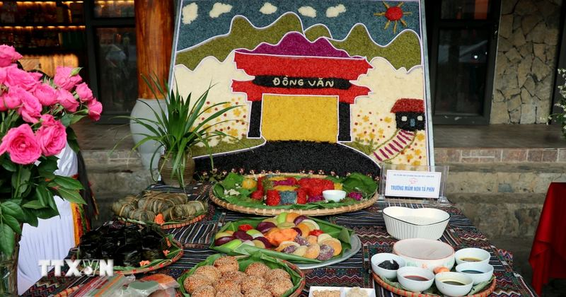
⚡
⚡
⚡
Chủ tịch Quốc hội: Tiến độ công trình APEC 2027 phải tính từng phút, từng giờ
Ngày 25/10, Chủ tịch Quốc hội Trần Thanh Mẫn và Phó thủ tướng thường trực Phạm Gia Túc cùng lãnh đạo bộ ngành Trung ương đã đi kiểm tra tiến độ thực hiện Nghị quyết số 41/2026/QH16 của Quốc hội quy định cơ chế, chính sác
⚡
Nghị quyết 57: Ngành xây dựng đồng bộ hơn 11 triệu bản ghi dữ liệu quốc gia
Facebook Twitter Lưu bài viết Bản in Copy link Bộ Xây dựng có tổng cộng khoảng 11,2 triệu bản ghi thuộc phạm vi dữ liệu được thống kê. Trong số này, 11,1 triệu bản ghi đã được đồng bộ với Trung tâm Dữ liệu Quốc gia đạt 9
Đại học Quốc gia Hà Nội cần tiên phong phát triển công nghệ, giải quyết những bài toán lớn của quốc gia
Phó Thủ tướng Hồ Quốc Dũng phát biểu chỉ đạo tại Chương trình "Hòa Lạc ngày mới 2026" và phát động Kế hoạch 120 ngày phát triển đột phá của Đại học Quốc gia (ĐHQG) Hà Nội - Ảnh: chinhphu.vn/Gia Huy Sáng 25/10, Phó Thủ tư

Lần đầu tiên trong lịch sử, người Việt tiêu tới hơn 1 triệu tỷ đồng mỗi ngày mà không cần tiền mặt
TIN MỚI Công ty Cổ phần Thanh toán Quốc gia Việt Nam (NAPAS) mới đây đã tổ chức Hội nghị khách hàng 2026 dành cho các Tổ chức thành viên là các trung gian thanh toán. Thông tin tại hội nghị cho biết, thị trường thanh toá
Người mua vàng đầu tuần có thể lỗ tới 8,1 triệu đồng/lượng, mua ở đỉnh lỗ hơn 52 triệu
Người mua vàng đầu tuần có thể lỗ tới 8,1 triệu đồng/lượng, mua ở đỉnh lỗ hơn 52 triệu Phan Trang | 25/10/2026 08:33 AM | Kinh doanh Theo dõi Cafebiz.vn trên Người mua vàng nhẫn SJC từ đầu tuần và bán ra vào sáng 24/10 c
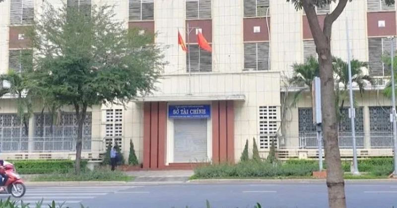
Bị mạo danh lập doanh nghiệp: Nạn nhân khởi kiện Phòng đăng ký kinh doanh ở TPHCM
Bị mạo danh lập doanh nghiệp: Nạn nhân khởi kiện Phòng đăng ký kinh doanh ở TPHCM Theo Duy Quang | 25/10/2026 08:25 AM | Xã hội Theo dõi Cafebiz.vn trên Bị lấy thông tin để lập doanh nghiệp và bị cấm xuất cảnh, một người
Honda Vario Evo 2026 lần đầu có thông tin tại Việt Nam: Dáng hầm hố hơn bản thường, 2 phanh đĩa, có ABS, thêm đối trọng cho NVX
TIN MỚI Honda Vario Evo được đăng ký tại Việt Nam Trong Công báo Sở hữu công nghiệp phát hành ngày 15/10/2026, Honda Motor Co., Ltd. đăng ký bảo hộ kiểu dáng một mẫu xe tay ga tại Việt Nam. Hình ảnh trong hồ sơ trùng khớ
Trên tay Xiaomi Smart Band 11: Màn hình sáng hơn, thân gọn hơn, pin đến 21 ngày, giá sale còn 1.2 triệu
Trên tay Xiaomi Smart Band 11: Màn hình sáng hơn, thân gọn hơn, pin đến 21 ngày, giá sale còn 1.2 triệu Theo Phạm Hoàng | 25/10/2026 08:02 AM | Công nghệ Theo dõi Cafebiz.vn trên Thân máy mỏng, màn hình dễ quan sát ngoài
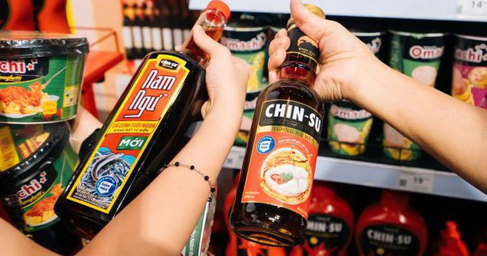
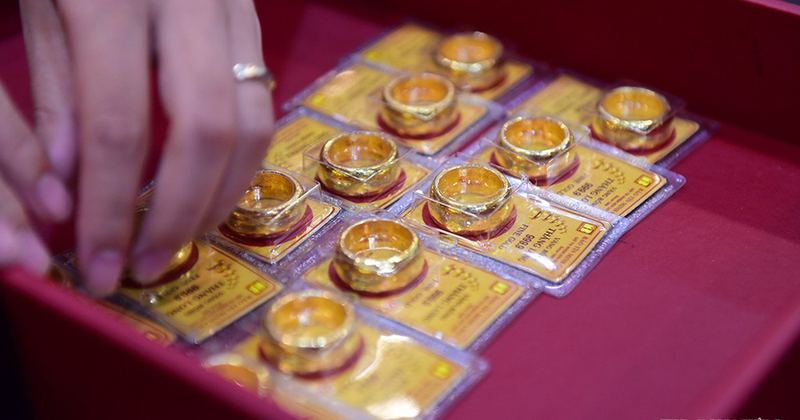
Giá vàng hôm nay 25.10.2026: Người mua vàng nhẫn lỗ hơn 8 triệu đồng sau một tuần
Sáng 25.10, giá vàng tiếp tục ghi nhận một tuần sụt giảm. Cụ thể, vàng miếng tại Công ty SJC được mua vào ở mức 138,7 triệu đồng/lượng và bán ra 141,7 triệu đồng, giảm 1,9 triệu đồng so với cuối tuần trước. Cộng thêm chê

Đánh thức tiềm năng, mở hướng phát triển du lịch xanh vùng Đồng bằng sông Cửu Long
Facebook Twitter Lưu bài viết Bản in Copy link Sở hữu hệ sinh thái sông nước đặc trưng, tài nguyên nông nghiệp phong phú và bản sắc văn hóa cộng đồng đa dạng, Đồng bằng sông Cửu Long có nhiều lợi thế để phát triển du lịc
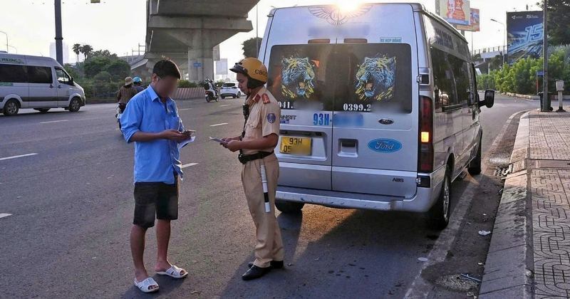
Các nội dung được quan tâm trong Dự thảo Luật xử lý vi phạm hành chính sửa đổi
Facebook Twitter Lưu bài viết Bản in Copy link Báo Điện tử VietnamPlus trân trọng giới thiệu một số nội dung truyền thông chính sách Dự thảo Luật xử lý vi phạm hành chính (sửa đổi). Thời gian qua, Đảng đã ban hành nhiều
Bước đệm cho dòng máy bay chủ lực của Nga: Khi cảm biến chống băng giá vượt qua thử thách "sét đánh"
Bước đệm cho dòng máy bay chủ lực của Nga: Khi cảm biến chống băng giá vượt qua thử thách "sét đánh" Theo Thùy Anh | 25/10/2026 05:00 AM | Công nghệ Theo dõi Cafebiz.vn trên Trong hành trình nội địa hóa và tái thiết lập
Lần đầu tiên trong lịch sử, Việt Nam có tổ hợp thể thao hơn 400ha do tỷ phú Phạm Nhật Vượng đầu tư, sở hữu sân vận động 135.000 chỗ ngồi lớn nhất hành tinh
TIN MỚI Quy mô hơn 400ha, nằm trong Top 4 các tổ hợp thể thao lớn nhất thế giới Khu liên hợp thể thao quốc tế Hùng Vương (Hùng Vương International Sports Complex) được định hướng trở thành trung tâm thể thao – văn hóa –
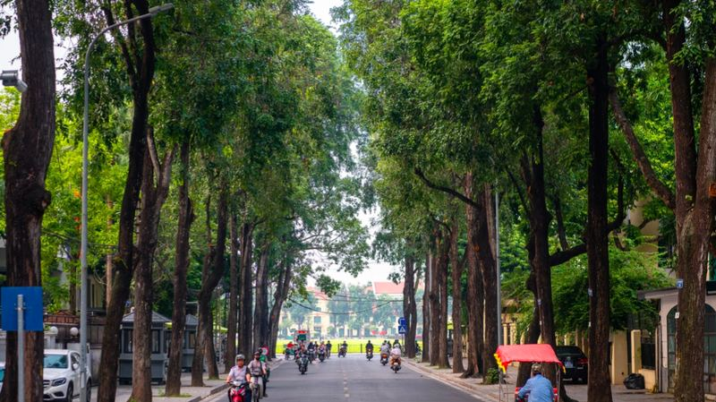
11 người vận chuyển hơn 6 tấn thực phẩm qua biên giới, một số thùng bốc mùi hôi thối
Khoảng 5h ngày 22/10, tại khu vực biên giới Hồ Tràng Vinh, thuộc thôn Pò Hèn, xã Hải Sơn, tổ công tác Phòng Nghiệp vụ, Ban Chỉ huy Bộ đội Biên phòng TP Quảng Ninh chủ trì, phối hợp với Đồn Biên phòng Pò Hèn kiểm tra, phá
iPhone Duo vừa mở bán đã xuất hiện vết nứt màn hình sau vài giờ sử dụng, Apple lập tức đổi mới 1-1
iPhone Duo vừa mở bán đã xuất hiện vết nứt màn hình sau vài giờ sử dụng, Apple lập tức đổi mới 1-1 Thiên Minh | 25/10/2026 16:57 PM | Công nghệ Theo dõi Cafebiz.vn trên Vừa chính thức lên kệ, iPhone Duo đã khiến cộng đồn
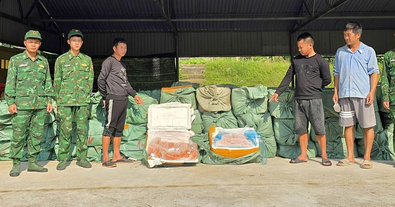
Quảng Ninh: Bắt giữ 11 người vận chuyển hơn 6 tấn thực phẩm qua biên giới
Ngày 25.10, Ban Chỉ huy Bộ đội Biên phòng TP.Quảng Ninh cho hay, khoảng 5 giờ ngày 22.10, tại khu vực biên giới Hồ Tràng Vinh, thuộc thôn Pò Hèn, xã Hải Sơn, tổ công tác Phòng Nghiệp vụ, Ban Chỉ huy Bộ đội Biên phòng TP.
Vụ nhầm kết quả xổ số Vĩnh Long: Người mua lỡ vứt vé trúng thưởng thì sao?
Người quay số cầm nhầm bảng số (người thứ 2 từ phải sang) - Ảnh: Mạng xã hội Sau sự cố công bố nhầm kết quả xổ số Vĩnh Long ngày 23-10, nhiều bạn đọc gửi ý kiến đến Tuổi Trẻ , bày tỏ sự quan tâm đến trách nhiệm của đơn v
Lý do đề xuất bỏ thủ tục cơ quan công an kiểm tra công tác nghiệm thu phòng cháy chữa cháy
TIN MỚI Dự án Luật sửa đổi, bổ sung một số điều của Luật Quản lý, sử dụng vũ khí, vật liệu nổ và công cụ hỗ trợ và Luật Phòng cháy, chữa cháy và cứu nạn, cứu hộ (PCCC và CNCH) do Bộ Công an chủ trì xây dựng, dự kiến trìn
Đại học Quốc gia Hà Nội cần tiên phong giải quyết các bài toán lớn của đất nước
Facebook Twitter Lưu bài viết Bản in Copy link Ngày 25/10, Đại học Quốc gia Hà Nội tổ chức chương trình “Hòa Lạc ngày mới 2026," phát động Kế hoạch 120 ngày phát triển đột phá, nhằm tập trung phát triển hạ tầng, khoa học
Chủ tịch Quốc hội Trần Thanh Mẫn kiểm tra tiến độ các công trình APEC 2027
Chủ tịch Quốc hội Trần Thanh Mẫn kiểm tra thực tế tiến độ triển khai một số công trình, dự án phục vụ Hội nghị cấp cao APEC 2027. Ảnh: Tào Đạt Chuyến kiểm tra nhằm đánh giá tiến độ triển khai các dự án và việc thực hiện
Kết quả chuyến thăm châu Âu của Tổng Bí thư, Chủ tịch nước Tô Lâm: Mở ra cơ hội hợp tác, thu hút nguồn lực khoảng 20 tỷ Euro
Bộ trưởng Bộ Ngoại giao Lê Hoài Trung. Ảnh: BỘ NGOẠI GIAO Có kế hoạch triển khai các dự án quy mô 20 tỷ Euro Theo Bộ trưởng Lê Hoài Trung, chuyến thăm đã thành công tốt đẹp và đạt được nhiều kết quả quan trọng và thực ch
Cấm ô tô, xe máy di chuyển tại nhiều tuyến đường dịp Festival trà Quốc tế Thái Nguyên
Ngày 25/10, Công an tỉnh Thái Nguyên cho biết, để đảm bảo an toàn giao thông trong dịp kỷ niệm 195 năm ngày thành lập tỉnh (4/11/1831- 4/11/2026) và Festival Trà Quốc tế - Thái Nguyên năm 2026, nhiều tuyến đường tại khu
Ban Bí thư yêu cầu giảm mạnh hội nghị, văn bản hành chính trong cơ quan Đảng
Ban Bí thư vừa ban hành Quyết định số 495 về Chương trình cải cách hành chính trong các cơ quan Đảng giai đoạn 2026 - 2030, có hiệu lực từ ngày 20.10. Theo đó đặt ra nhiều mục tiêu cụ thể về giảm hội nghị, giấy tờ, đơn g
Valdano: 'El Clasico là cuộc chiến của quả bóng, không gian và kẻ bị tình nghi'
Valdano: 'El Clasico là cuộc chiến của quả bóng, không gian và kẻ bị tình nghi' Theo đánh giá của cựu CEO và HLV Real Madrid, Jorge Valdano, El Clasico không đơn thuần chỉ là một trận bóng đá, nơi trọng tài mặc định trở
Tin mới vụ mua đặc sản khâu nhục Lạng Sơn trên mạng, nhận về cục xương chân giò
Chi cục Quản lý thị trường tỉnh Lạng Sơn vừa thông tin kết quả rà soát, xác minh hoạt động sản xuất, kinh doanh sản phẩm khâu nhục đóng hộp trên địa bàn. Cụ thể, hai tuần qua, Đội Quản lý thị trường số 7 đã kiểm tra, xác
Vườn quốc gia Cát Tiên sắp có thêm 10.000 ha từ Công ty lâm nghiệp La Ngà
UBND thành phố Đồng Nai vừa ban hành quyết định về việc phê duyệt phương án sử dụng đất của Công ty TNHH MTV lâm nghiệp La Ngà - Đồng Nai (viết tắt là Công ty lâm nghiệp La Ngà). Trong đó bàn giao hơn 10.000 ha (thuộc đị
Việt Nam - EU và Bỉ: Dấu ấn chuyến thăm, mở rộng không gian hợp tác phát triển
Chuyến thăm chính thức Liên minh châu Âu (EU) và Vương quốc Bỉ của Tổng Bí thư, Chủ tịch nước Tô Lâm cùng Phu nhân và đoàn đại biểu cấp cao Việt Nam đã kết thúc tốt đẹp, ghi dấu những kết quả quan trọng về chính trị, ngo
Lý do đề xuất bỏ thủ tục cơ quan công an kiểm tra công tác nghiệm thu phòng cháy chữa cháy
Dự án Luật sửa đổi, bổ sung một số điều của Luật Quản lý, sử dụng vũ khí, vật liệu nổ và công cụ hỗ trợ và Luật Phòng cháy, chữa cháy và cứu nạn, cứu hộ (PCCC và CNCH) do Bộ Công an chủ trì xây dựng, dự kiến trình tại Kỳ
Thế giới sáng 25-10: Ông Kim Jong-un trở về nước, căng thẳng tại Trung Đông vẫn tiếp diễn
Ủy viên Thường vụ Bộ Chính trị, Chủ tịch Chính hiệp toàn quốc Trung Quốc Vương Hộ Ninh tiễn nhà lãnh đạo Triều Tiên Kim Jong-un tại cầu Tân Áp, Lục Giang, ngày 24-10. Ảnh: XINHUA Ô ng K im J ong- u n trở về T riều T iên
Kiện vì bị từ chối tách 400m2 đất; xây nhà ở Hà Nội không báo khởi công bị phạt
Bị từ chối tách 400m2 đất ở thành 4 thửa, người phụ nữ kiện văn phòng đăng ký đất đai Theo trình bày của bà C. (ngụ tỉnh Lào Cai), gia đình bà đang sử dụng thửa đất có diện tích 400m2 tại địa phương. Thửa đất này được cấ
Không có tiền mua nhà, ở thuê 5 triệu/tháng: Đóng chậm 4 ngày đã bị đá ra đường
TIN MỚI Ở tuổi 27, Ko Dae Seong - Chàng trai hiện đang sinh sống ở Seoul (Hàn Quốc), rơi vào cảnh không có nơi ở, bị "đá ra đường" chỉ vì 4 ngày chậm thanh toán 270.000 won tiền thuê nhà (khoảng 5 triệu đồng). Câu chuyện
Cựu thống đốc 'bất bại' gieo hy vọng cho đảng Dân chủ trong cuộc đua Thượng viện
Cựu thống đốc 'bất bại' gieo hy vọng cho đảng Dân chủ trong cuộc đua Thượng viện Mỹ Ứng viên Dân chủ Roy Cooper thu hút chú ý trong cuộc đua giành ghế Thượng viện tại Bắc Carolina, khi ông chưa từng thất bại suốt gần 40
Người sống thọ thường uống 3 loại nước trước khi ngủ: "Đánh bại" mất ngủ, dưỡng nhan lại bổ như nhân sâm
TIN MỚI Chất lượng giấc ngủ và thói quen sinh hoạt buổi tối đóng vai trò quan trọng trong việc phục hồi tế bào, cân bằng nội tiết và kéo dài tuổi thọ. Bên cạnh việc giữ tinh thần thư thái, nhiều người sống thọ có thói qu
Hiện trường kinh hoàng vụ toà nhà đổ sập tại Kenya: Cảnh tượng ác mộng với tiếng gọi cầu cứu dưới đống đổ nát
Hiện trường kinh hoàng vụ toà nhà đổ sập tại Kenya: Cảnh tượng ác mộng với tiếng gọi cầu cứu dưới đống đổ nát Theo Phạm Trang | 25/10/2026 07:54 AM | Xã hội Theo dõi Cafebiz.vn trên Một tòa nhà nhiều tầng đang xây dựng b
Hà Nội quy định chuẩn hộ nghèo mới, thu nhập không quá 3,5 triệu đồng/tháng ở đô thị
TIN MỚI Phó Chủ tịch UBND Thành phố Bùi Duy Cường đã ký ban hành Quyết định số 149/2026/QĐ-UBND về việc ban hành quy định chuẩn nghèo đa chiều của thành phố Hà Nội giai đoạn 2027 – 2030. Theo Quyết định, đối tượng áp dụn
Nhạc hội 'K-Live Festival' mở màn chuỗi sự kiện giao lưu văn hóa Việt-Hàn
Facebook Twitter Lưu bài viết Bản in Copy link Trong đêm diễn đầu tiên của nhạc hội Hàn Quốc “K-Live Festival Band:Age In Hanoi” (24/10), ba ban nhạc TOUCHED, Silica Gel và QWER đã mang đến những màn trình diễn mang đậm
Tin vui cho người đang áp lực tiền bạc: 3 con giáp có dấu hiệu tài chính đổi chiều từ Rằm tháng 9 âm
TIN MỚI Không phải lúc nào "đổi vận tài chính" cũng đồng nghĩa với một khoản tiền lớn bất ngờ xuất hiện. Với nhiều người, bước ngoặt thực sự đôi khi chỉ bắt đầu từ việc nguồn thu bớt bấp bênh, một khoản nợ được xử lý, cô
Vaccine mRNA cá thể hóa đầu tiên mở ra bước ngoặt điều trị u hắc tố và ung thư
Facebook Twitter Lưu bài viết Bản in Copy link Các kết quả mới công bố ngày 24/10 tại hội nghị thường niên Hiệp hội Ung thư lâm sàng châu Âu (ESMO) về nghiên cứu lâm sàng giai đoạn 3 INTerpath-001 đã mang lại niềm hy vọn
Chuyển những nền tảng quan hệ tốt đẹp thành chương trình hợp tác cụ thể, thực chất
Chuyến thăm chính thức Liên minh châu Âu (EU) và Vương quốc Bỉ của Tổng Bí thư, Chủ tịch nước Tô Lâm và Phu nhân cùng đoàn đại biểu cấp cao Việt Nam đã tạo bước chuyển quan trọng, củng cố tin cậy chính trị, định vị lại m
Cụ ông 100 tuổi ở Đà Nẵng không thích ăn rau, tiết lộ bí quyết sống khỏe
TIN MỚI Ở tuổi 100, cụ Vương Nghiên (trú tổ dân phố Quá Giáng 1, phường Hòa Xuân, Tp. Đà Nẵng) vẫn duy trì nếp sinh hoạt giản dị, tự chăm sóc bản thân và giữ tinh thần vui vẻ, lạc quan. Theo Vietnamnet , gia đình cụ Nghi
BigBang quỳ gối cảm ơn khán giả Việt Nam, đêm 2 tối nay vẫn sẽ rất 'nóng'
Đã quá Hà Nội ơi cái khung cảnh này - Ảnh: HÀ PHƯƠNG Đêm diễn đầu tiên của concert BIGBANG 2026-2027 WORLD TOUR < XX : COSMOS > diễn ra tối 24-10 tại sân vận động Mỹ Đình, hút hàng chục ngàn khán giả Việt Nam và quốc tế.
"Chạy sô" đám cưới nuôi đam mê, nữ sinh xuất sắc trở thành thủ khoa đầu ra
(Dân trí) - Bỏ công việc ổn định tại Trung tâm văn hóa của tỉnh, Nguyễn Thu Hà thi lại đại học. Vừa học, vừa "chạy sô" đám cưới, nữ sinh vẫn đạt thủ khoa đầu ra Trường ĐH Sân khấu Điện ảnh Hà Nội. Nguyễn Thu Hà, thủ khoa
Nguyễn Anh Minh khát vọng chinh phục major, truyền cảm hứng cho golf trẻ Việt Nam
Golfer nghiệp dư số một Việt Nam Nguyễn Anh Minh sẽ thi đấu Giải Vô địch Golf Nghiệp dư châu Á - Thái Bình Dương (AAC) ở New Zealand từ ngày 29/10 đến 1/11 ở Te Arai Links với mục tiêu bước lên ngôi vị cao nhất. Nhà vô đ
Khoảnh khắc khiến khán giả quốc tế kinh ngạc trong show BIGBANG tại Hà Nội
(Dân trí) - Màn đồng thanh hát “Haru Haru” của hàng chục nghìn khán giả tại sân vận động Mỹ Đình khiến người hâm mộ quốc tế xúc động, góp phần tạo nên dấu ấn trong đêm diễn đầu tiên của BIGBANG tại Hà Nội. Tối 24/10, BIG
Một sân bay mở đường băng mới ngay trên biển, diện tích tương đương 900 sân bóng đá: Xi măng được bơm xuống đáy biển để tạo 360.000 cột chống, tiêu tốn gần 500.000 tỷ đồng
Một sân bay mở đường băng mới ngay trên biển, diện tích tương đương 900 sân bóng đá: Xi măng được bơm xuống đáy biển để tạo 360.000 cột chống, tiêu tốn gần 500.000 tỷ đồng Theo Minh Ánh | 25/10/2026 06:26 AM | Kinh doanh
Người đàn ông Nghệ An đưa con gái "chấm điểm" vợ mới và mẹ kế có 1 không 2
Đưa con đi... hỏi cưới vợ mới Vòng vèo trong xóm Đồng Xuân, xã Quan Thành (Nghệ An), hỏi đường đến nhà bà Phan Thị Thủy (SN 1971), chúng tôi nhận được những lời tán dương của dân làng về người mẹ kế “có 1 không 2”. “Hiếm
6 cư dân giải cứu bé gái ba tuổi bị treo lơ lửng bên ngoài căn hộ tầng 12
TIN MỚI Từ ban công tầng 11, các cư dân đã rướn người ra ngoài và dùng một chiếc ghế nhỏ để đỡ lấy đứa trẻ, ngăn không cho bé rơi xuống. Theo các phương tiện truyền thông Trung Quốc, trong đó có tờ The Beijing News , sự
Khách Hàn Quốc nói "không thể tin nổi" khi ăn cháo giá 2.000 đồng ở TPHCM
Len lỏi trong con hẻm trên đường Phan Văn Khỏe, anh Lee Ho Jun (32 tuổi) tìm đến quán cháo trắng có cái tên khá đặc biệt: Về đây em. Anh gọi hai phần cháo, gồm một tô lớn giá 5.000 đồng và một tô nhỏ chỉ 2.000 đồng. Chàn
Nam sinh Ngoại thương từng 'đứng hình' trên sân khấu giành danh hiệu Nam vương
Vũ Minh Tiến là sinh viên năm thứ 4 ngành Quản trị kinh doanh, Trường ĐH Ngoại thương Hà Nội. Tiến có GPA 3,95/4,0, từng đạt danh hiệu Sinh viên tiêu biểu cấp trường và giải Nhì Cuộc thi Nghiên cứu khoa học cấp trường nă
Công dụng một loại cây dùng gội đầu nằm trong danh mục cấm trồng ở Hà Nội
Bồ kết là loài cây gắn liền với những nồi nước gội đầu thơm mùi thảo mộc của nhiều thế hệ người Việt. Không chỉ có giá trị trong đời sống, quả và gai bồ kết còn được sử dụng trong y học cổ truyền. Tuy nhiên, loài cây này
Đề xuất tạm hoãn xuất cảnh với người chưa chấp hành xong quyết định xử phạt
Theo Bộ Công an, sau hơn 13 năm triển khai thi hành, Luật Xử lý vi phạm hành chính đã tạo cơ sở pháp lý quan trọng cho công tác phòng ngừa, phát hiện và xử lý các hành vi vi phạm pháp luật, góp phần bảo đảm kỷ cương, trậ
Nội dung Dự thảo Luật Quản lý vũ khí, vật liệu nổ và Luật Phòng cháy, chữa cháy
Facebook Twitter Lưu bài viết Bản in Copy link Báo Điện tử VietnamPlus trân trọng giới thiệu một số nội dung truyền thông chính sách Dự án Luật sửa đổi, bổ sung một số điều của Luật Quản lý, sử dụng vũ khí, vật liệu nổ v
Tin tức sáng 25-10: Tạm bàn giao mặt bằng làm công viên Bến Nhà Rồng - Khánh Hội
Khu vực bến cảng Nhà Rồng - Khánh Hội (TP.HCM) - Ảnh: CHÂU TUẤN T ạm bàn giao mặt bằng làm công viên Bến Nhà Rồng - Khánh Hội UBND TP.HCM vừa đề nghị Chi cục Hải quan khu vực II hỗ trợ Công ty cổ phần Cảng Sài Gòn mượn t
Gia đình doanh nhân Việt đặc biệt có 3 Anh hùng Lao động: Người cha 2 lần được phong tặng, con gái là đại biểu Quốc hội, điều hành tập đoàn nghìn tỷ
TIN MỚI Gia đình ông Lê Văn Kiểm, Chủ tịch HĐQT Tập đoàn KN Holdings, là một trường hợp đặc biệt trong giới doanh nhân Việt Nam khi cả hai vợ chồng và con gái đều được phong tặng danh hiệu Anh hùng Lao động. Ông Lê Văn K
Phụ huynh tiếp tục phản ánh chất lượng suất ăn bán trú tại Trường Tiểu học Phú Trinh
Từ ngày 23 đến 25-10, phụ huynh Trường Tiểu học Phú Trinh tiếp tục cung cấp cho Báo SGGP hình ảnh các suất ăn bán trú, do nhà trường và đơn vị cung cấp suất ăn gửi đến phụ huynh trong tuần (từ ngày 19 đến 23-10). Theo ph
Chủ tịch Quốc hội Trần Thanh Mẫn nhấn mạnh tinh thần "3 không" trong thực hiện dự án phục vụ APEC 2027
Chủ tịch Quốc hội Trần Thanh Mẫn chủ trì cuộc làm việc với lãnh đạo tỉnh An Giang - Ảnh: TTXVN Cùng dự cuộc làm việc có Ủy viên Bộ Chính trị, Phó Thủ tướng Thường trực Chính phủ Phạm Gia Túc; Ủy viên Trung ương Đảng, Phó
Bố mẹ của Hồ Văn Tình, phạm nhân đang trốn Trại giam A2: Mong con sớm đầu thú để không 'chết bờ, chết bụi'
Bố mẹ của Hồ Văn Tình, phạm nhân đang trốn Trại giam A2: Mong con sớm đầu thú để không 'chết bờ, chết bụi' Theo Tiền Lê | 25/10/2026 17:43 PM | Xã hội Theo dõi Cafebiz.vn trên “Hơn 10 năm trước nó mua vé số rồi trúng đượ
Xổ số miền Nam ngày 25 tháng 10: Chi 1,6 triệu mua nguyên cây, trúng đài Đà Lạt
Theo kết quả xổ số miền Nam ngày 25 tháng 10 , đại lý vé số Chọn 57 ở Tây Ninh cho biết đã bán nguyên cây vé trúng số. Theo đó, 160 tờ có 2 số cuối là 59 thuộc xổ số Đà Lạt ngày 25 tháng 10 trúng giải tám. Đại lý tiết lộ
Phát hiện hơn 6 tấn nầm lợn, trứng gà non bốc mùi ở biên giới Quảng Ninh
Ngày 25/10, Phòng Nghiệp vụ, Ban Chỉ huy Bộ đội Biên phòng TP Quảng Ninh cho biết, đơn vị đang phối hợp với các lực lượng chức năng xác minh, xử lý vụ vận chuyển hơn 6 tấn thực phẩm không rõ nguồn gốc tại khu vực biên gi
Chủ tịch Quốc hội Trần Thanh Mẫn nhấn mạnh tinh thần "3 không" trong thực hiện dự án phục vụ APEC 2027
Facebook Twitter Lưu bài viết Bản in Copy link Sáng 25/10, tại đặc khu Phú Quốc (tỉnh An Giang), Ủy viên Bộ Chính trị, Chủ tịch Quốc hội Trần Thanh Mẫn cùng Đoàn công tác Trung ương đã làm việc với lãnh đạo tỉnh An Giang
Phở Việt vươn tầm thế giới: Câu chuyện văn hóa chạm tới trái tim thực khách
Đó là mùi thơm nồng ấm, ngọt ngào của quế hồi, thảo quả quyện vào hương vị đậm đà của nước dùng được ninh nhừ từ xương và thịt suốt nhiều giờ liền. Chỉ cần làn hương ấy khẽ lướt qua nơi sống mũi, bao ký ức rộn rã nơi góc
Sự đón tiếp tình cảm, thân tình dành cho Tổng Bí thư, Chủ tịch nước và phu nhân
Tổng Bí thư, Chủ tịch nước Tô Lâm và phu nhân cùng đoàn đại biểu cấp cao Việt Nam đã kết thúc chuyến thăm cấp Nhà nước Đan Mạch, thăm chính thức Liên minh châu Âu (EU) và Bỉ. Bộ trưởng Ngoại giao Lê Hoài Trung cho biết,
Toàn cảnh loạt dự án hạ tầng cảng, giao thông ven biển TP.HCM tăng tốc về đích
Toàn cảnh loạt dự án hạ tầng cảng, giao thông ven biển TP.HCM tăng tốc về đích Theo Lương Ý | 25/10/2026 14:21 PM | Xã hội Theo dõi Cafebiz.vn trên Các dự án đường ven biển, đường nối cảng Cái Mép - Thị Vải và tuyến nối
Vụ Mr Pips: 919 bị hại, 202 luật sư, gần 100 người liên quan tham gia phiên tòa
Facebook Twitter Lưu bài viết Bản in Copy link Theo kế hoạch, sáng 26/10, Tòa án Nhân dân thành phố Hà Nội mở phiên tòa xét xử sơ thẩm 188 bị cáo trong vụ án Phó Đức Nam (tức Mr Pips) và đồng phạm “Lừa đảo chiếm đoạt tài
Mở rộng mạng lưới đối tác tin cậy và tăng cường sự gắn kết của Việt Nam với châu Âu
Phóng viên: Xin Bộ trưởng cho biết những kết quả quan trọng, nổi bật đạt được trong chuyến thăm cấp Nhà nước tới Vương quốc Đan Mạch, thăm chính thức Liên minh châu Âu (EU) và Vương quốc Bỉ của Tổng Bí thư, Chủ tịch nước
Khối lượng thi công còn lớn, Bộ Xây dựng rốt ráo thực hiện “6 rõ” trong giải ngân
Facebook Twitter Lưu bài viết Bản in Copy link Thời gian thi công từ nay đến cuối năm 2026 chỉ còn hơn 2 tháng, trong khi khối lượng công việc còn lại rất lớn, nếu các cơ quan, đơn vị không có sự nỗ lực vượt bậc sẽ không
CSGT phát hiện 3 ô tô chở thịt không có giấy kiểm dịch tại cửa ngõ TP.HCM
Rạng sáng nay 25.10, Đội CSGT Rạch Chiếc, thuộc Phòng CSGT Công an TP.HCM vừa phối hợp Trạm Kiểm dịch động vật Thủ Đức kiểm tra, phát hiện 3 trường hợp vận chuyển thịt heo, thịt bò và dê đã giết mổ không có giấy chứng nh

Danh sách công trình/cụm công trình được đề nghị xét tặng Giải thưởng Hồ Chí Minh, Giải thưởng Nhà nước về khoa học và công nghệ đợt 7
Theo kết quả xét tặng của Hội đồng cấp Nhà nước, có 11 công trình/cụm công trình được đề nghị xét tặng Giải thưởng Hồ Chí Minh và 1 cụm công trình được đề nghị xét tặng Giải thưởng Nhà nước về khoa học và công nghệ. Thực
Chân dung cô gái sinh năm 2002 trở thành Tổng giám đốc Dược phẩm Bến Tre chỉ sau 2 tháng gia nhập công ty
TIN MỚI Mới đây, Công ty Cổ phần Dược phẩm Bến Tre (Bepharco) công bố quyết định bổ nhiệm bà Trần Ngô Minh Anh làm Tổng giám đốc kiêm người thực hiện công bố thông tin của doanh nghiệp, có hiệu lực từ ngày 1/11/2026. Đán
Chủ tịch FIFA thách thức các đối thủ: Tôi được nhiều liên đoàn ủng hộ lắm!
TIN MỚI 3 tháng trước, ông Infantino từng đối mặt với áp lực từ chức nặng nề khi phải từ bỏ kế hoạch kêu gọi đầu tư tư nhân tại World Cup. Nhưng ông đã nhanh chóng lấy lại thế chủ động trên bàn cờ quyền lực của bóng đá t
BIGBANG mặc áo lông, đội mũ len kín mít bất chấp thời tiết oi nóng ở Hà Nội
Trong đêm diễn đầu tiên tại Hà Nội thuộc chuyến lưu diễn kỷ niệm 20 năm hoạt động của BIGBANG, Taeyang và Daesung lựa chọn những chiếc áo khoác lông có họa tiết đen, trắng, vàng nâu đan xen. Bề mặt lông xù, phom rộng cùn
Chủ tịch FIFA thách thức các đối thủ: Tôi được nhiều liên đoàn ủng hộ lắm!
3 tháng trước, ông Infantino từng đối mặt với áp lực từ chức nặng nề khi phải từ bỏ kế hoạch kêu gọi đầu tư tư nhân tại World Cup. Nhưng ông đã nhanh chóng lấy lại thế chủ động trên bàn cờ quyền lực của bóng đá thế giới.
Lịch trực tiếp bóng đá châu Âu: 'Siêu kinh điển' Barca chạm trán Real Madrid
Lịch trực tiếp bóng đá châu Âu: 'Siêu kinh điển' Barca chạm trán Real Madrid Trận đấu giữa Real Madrid và Barca trên sân Nou Camp sẽ được trực tiếp trên ON Football và SCTV15. Barca có lợi thế sân nhà và phong độ ấn tượn
Báo Indonesia: “Supachok lao dốc sau bàn thắng vào lưới đội tuyển Việt Nam”
(Dân trí) - Truyền thông Indonesia chia sẻ, từ khi ghi bàn thắng gây tranh cãi vào lưới đội tuyển Việt Nam ở chung kết ASEAN Cup 2024, sự nghiệp của tiền vệ người Thái Lan Supachok Sarachat lao dốc không phanh. Supachok
Bộ Công an nói về đề xuất bỏ một số thủ tục PCCC, chuyển mạnh sang hậu kiểm
Ngày 24/10, đại diện Cục Cảnh sát PCCC&CNCH (Bộ Công an) đã thông tin về các đề xuất trong dự án Luật Chính phủ trình Quốc hội tại Kỳ họp thứ 2. Đại diện Cục Cảnh sát PCCC&CNCH cho biết, theo quy định của Luật PCCC&CNCH
Một DN trả cổ tức 10.000 đồng/cp ngay tháng 11, lịch sử "chia tiền" cao ngất ngưởng
TIN MỚI CTCP Mía đường Sơn La (mã chứng khoán: SLS) dự kiến chi gần 98 tỷ đồng để trả cổ tức niên độ 2025–2026 bằng tiền mặt với tỷ lệ 100%, tương ứng mỗi cổ phiếu nhận 10.000 đồng. Theo nghị quyết HĐQT, ngày đăng ký cuố
Vingroup đề xuất nạo vét sông Hồng, sông Đà, TP Hà Nội yêu cầu làm rõ chủng loại vật liệu dự kiến thu hồi
TIN MỚI Mới đây, Văn phòng UBND TP Hà Nội ban hành thông báo kết luận, chỉ đạo của Chủ tịch UBND TP Vũ Đại Thắng tại cuộc họp ngày 13/10 nghe báo cáo về Đề xuất nạo vét lòng dẫn, cải thiện khả năng thoát lũ và đảm bảo gi
Bệ phóng tên lửa đạn đạo bắn đạn dẫn đường cỡ nhỏ: Bước tiến vượt bậc, linh hoạt đa cỡ đạn
Bệ phóng tên lửa đạn đạo bắn đạn dẫn đường cỡ nhỏ. Ảnh: en.shiftdelete.net Sức mạnh công nghệ làm nên ‘sát thủ trên không’ Arash-3 Iran, không cần GPS Sự kết hợp hoàn hảo giữa bệ phóng tên lửa đạn đạo chiến thuật ITBM-60
Học tập, thực hành theo Bác gắn với đổi mới xây dựng và thi hành pháp luật
Làm thế nào để việc học và thực hành theo Bác không dừng lại ở nhận thức mà thực sự chuyển thành hành động, tạo chuyển biến trong công việc hằng ngày? Đây cũng là yêu cầu đặt ra đối với mỗi cán bộ, đảng viên ngành tư phá
Thủ tướng Anh kêu gọi thảo luận về việc khôi phục tự do di chuyển với EU
Facebook Twitter Lưu bài viết Bản in Copy link Trong một cuộc phỏng vấn với tờ The Sunday Times, Thủ tướng Anh Andy Burnham đã kêu gọi một cuộc tranh luận cởi mở, dựa trên tình hình thực tế về khả năng khôi phục tự do di
Biểu tình lan rộng ở châu Âu, chính quyền huy động cảnh sát, quân đội kiểm soát tình hình
Các binh sĩ tuần tra trên đường phố Milan (Ý) ngày 24-10 - Ảnh: EURO NEWS Ý Ngày 24-10, hàng ngàn người đã xuống đường ở các thành phố Milan, Rome, Turin, Bologna và Florence của Ý để phản đối chi phí sinh hoạt tăng cao,
[Ảnh] Chủ tịch Quốc hội kiểm tra tiến độ các công trình dự án phục vụ Hội nghị cấp cao APEC
Chủ tịch Quốc hội Trần Thanh Mẫn phát biểu tại buổi làm việc. (Ảnh: TTXVN) Phó Chủ tịch Quốc hội Nguyễn Hồng Diên phát biểu tại cuộc làm việc với Lãnh đạo tỉnh An Giang. (Ảnh: TTXVN) Phó Bí thư Tỉnh Ủy An Giang, Bí thư Đ
Khởi công Dự án nhà ở cho lực lượng vũ trang CAND tại Thành phố Hồ Chí Minh
Facebook Twitter Lưu bài viết Bản in Copy link Sáng 25/10, Bộ Công an tổ chức Lễ khởi công Dự án xây dựng nhà ở cho lực lượng vũ trang Công an nhân dân tại số 15/6C đường Đặng Văn Bi, phường Thủ Đức, Thành phố Hồ Chí Min
Chủ tịch Quốc hội Trần Thanh Mẫn kiểm tra tiến độ các dự án phục vụ APEC 2027
Sáng 25/10, tại đặc khu Phú Quốc, tỉnh An Giang, Ủy viên Bộ Chính trị, Chủ tịch Quốc hội Trần Thanh Mẫn và Đoàn công tác Trung ương đã kiểm tra thực tế một số công trình, dự án trọng điểm phục vụ Hội nghị cấp cao APEC 20
Nhiều biệt lệ trong chuyến thăm của Tổng Bí thư, Chủ tịch nước Tô Lâm tới Đan Mạch, EU và Bỉ
Bộ trưởng Ngoại giao Lê Hoài Trung cho biết, chuyến thăm tới Đan Mạch, Liên minh châu Âu (EU) và Vương quốc Bỉ của Tổng Bí thư, Chủ tịch nước Tô Lâm từ ngày 19-24/10 đã thành công tốt đẹp, đạt được nhiều kết quả quan trọ
Tờ vé số trúng độc đắc 199,9 tỉ đồng Vietlott Power 6/55 được bán ra ở đâu?
Lúc 18 giờ 30 hôm qua 24.10, Vietlott thông báo kết quả kỳ quay số mở thưởng kỳ 01415 loại hình xổ số tự chọn Vietlott - xổ số Power 6/55. Bộ số may mắn trúng thưởng trong lần quay tối qua là: 06 – 07 - 18 – 41 – 44 – 50
Đại biểu Phạm Khánh Phong Lan: Thận trọng với đề xuất mở rộng đăng ký hiến mô, tạng với người dưới 18 tuổi
Góp ý dự thảo Luật Hiến, lấy, ghép mô, bộ phận cơ thể người và hiến, lấy xác (sửa đổi), đại biểu Quốc hội Phạm Khánh Phong Lan cho rằng cần thận trọng với đề xuất mở rộng đối tượng được đăng ký hiến mô, tạng, đặc biệt là
Vòng xoáy đường cùng sinh kế: Bộ Tài chính cần sửa đổi quy định về vé số
Người bán vé số dạo là mắt xích cuối cùng đưa vé số đến người tiêu dùng, nhưng cũng là nhóm dễ gặp rủi ro khi vé không bán hết, phát sinh công nợ hoặc xảy ra tranh chấp với đại lý. Trong khi hoạt động kinh doanh xổ số đã
Thay đổi toàn diện cách tiếp cận về công trình quan trọng liên quan đến an ninh quốc gia
Dự thảo Luật Bảo vệ công trình quan trọng liên quan đến an ninh quốc gia quy định công trình quan trọng liên quan đến an ninh quốc gia gồm 3 nhóm: Công trình trọng điểm về an ninh quốc gia; Công trình an ninh, khu an nin
Giá cả đầu ngày: Cua đồng đắt hàng, tiểu thương không đủ bán, giá lúa tăng nhẹ
Cua đồng được bày bán đa dạng tại chợ Hòa An, phường Cao Lãnh, tỉnh Đồng Tháp - Ảnh: ĐẶNG TUYẾT Trong khi đó, giá lúa tươi tại Đồng bằng sông Cửu Long nhích nhẹ khoảng 100 đồng/kg ở một số giống. Cua đồng giá cao, tiểu t
Đề xuất bỏ thủ tục kiểm tra nghiệm thu phòng cháy, chữa cháy, chuyển sang hậu kiểm
Đề xuất bỏ thủ tục kiểm tra nghiệm thu phòng cháy, chữa cháy, chuyển sang hậu kiểm Ngày 19/8/2026, Chính phủ đã có Tờ trình số 582/TTr-CP trình Quốc hội dự thảo Luật sửa đổi, bổ sung một số điều của Luật Quản lý, sử dụng
Bảng màu từng được ưa chuộng khiến nhà lỗi thời và mẹo phối màu chuẩn đẹp
(Dân trí) - Sơn tường trắng, xám hoặc be từng là lựa chọn an toàn khi trang trí nhà cửa. Tuy nhiên, nếu sử dụng đơn điệu, những gam màu này có thể khiến không gian thiếu sức sống. Nhiều gia đình khi xây sửa nhà thường ch
Campuchia công bố dữ liệu mới, một con số giảm 11%: Bức tranh phía sau có gì đáng chú ý?
TIN MỚI Tờ Khmer Times (Campuchia) đưa tin, theo báo cáo của Cục Hàng không Dân dụng Campuchia (SSCA) công bố vào ngày 20/10, ngành hàng không nước này đã phục vụ khoảng 4,56 triệu hành khách trong 9 tháng đầu năm 2026,
Bộ Tài chính và loạt nhiệm vụ trọng tâm: Bảo đảm nguồn lực cho các mục tiêu phát triển
Trong tuần qua, Chính phủ, Thủ tướng Chính phủ tiếp tục giao Bộ Tài chính nhiều nhiệm vụ quan trọng, tập trung vào bố trí nguồn lực thực hiện các quy hoạch, chương trình phát triển, xây dựng cơ chế tài chính thu hút nhân
Từ vụ Bruno bị trộm cuỗm sạch nhà: Dàn sao Messi, Ronaldo, Beckham bảo vệ gia đình thế nào?
Từ vụ Bruno bị trộm cuỗm sạch nhà: Dàn sao Messi, Ronaldo, Beckham bảo vệ gia đình thế nào? Theo Tiên | 25/10/2026 08:40 AM | Xã hội Theo dõi Cafebiz.vn trên Các siêu sao bóng đá và cuộc đua an ninh đắt đỏ. Trước làn són
Công an phá chuyên án đặc biệt lớn tiêu thụ 100.000 giấy tờ giả: Bắt 'đầu sỏ' Nguyễn Xuân Trường SN 1996
Công an phá chuyên án đặc biệt lớn tiêu thụ 100.000 giấy tờ giả: Bắt 'đầu sỏ' Nguyễn Xuân Trường SN 1996 Theo Chi Chi | 25/10/2026 08:32 AM | Xã hội Theo dõi Cafebiz.vn trên Các đối tượng dựng “lò” in giấy tờ giả ở Campu
Vì sao mua hàng của người quen đôi khi khó từ chối hơn mua hàng của người lạ?
TIN MỚI Khi người bán là người mình biết, quyết định mua hàng đôi khi không còn đơn giản là có nhu cầu hay không. Chuyện tiền bạc còn đi kèm cảm giác ngại từ chối, sợ mất lòng và cả áp lực giữ gìn mối quan hệ. Nếu mua mộ
Thúc đẩy chăm sóc sức khỏe toàn diện, đẩy lùi gánh nặng ung thư cho phụ nữ Việt Nam
Nhằm đồng hành cùng phụ nữ trong chủ động chăm sóc sức khỏe, tăng cường nhận thức về phát hiện sớm nguy cơ ung thư và kết nối các nguồn lực chăm sóc sức khỏe cộng đồng, Hệ thống Nhà thuốc và Tiêm chủng Long Châu hợp lực
Vợ chồng NSND cả nước biết mặt mua biệt thự bị chơi xấu, phải bán xe đạp
TIN MỚI Mới đây, NSND Thanh Điền đã chia sẻ câu chuyện vợ chồng ông tậu biệt thự khi cố NSND Thanh Kim Huệ mới 21 tuổi. Ông nói: "Tôi thổ lộ với các bạn, năm 21 tuổi Thanh Kim Huệ đã mua được một căn nhà lớn. Lúc đó, tôi
Bộ GD-ĐT dự kiến danh mục ngành, nghề đào tạo nặng nhọc, nguy hiểm, độc hại
Theo đó, dự thảo thông tư nêu danh mục ngành, nghề đào tạo nặng nhọc, độc hại, nguy hiểm trình độ cao đẳng, trình độ trung cấp, giáo dục trung học nghề, trình độ sơ cấp và danh mục ngành, nghề đào tạo khó tuyển sinh nhưn
Công an phá chuyên án đặc biệt lớn tiêu thụ 100.000 giấy tờ giả: Bắt 'đầu sỏ' Nguyễn Xuân Trường SN 1996
TIN MỚI Ngày 23/10, Công an phường Hạc Thành, tỉnh Thanh Hóa cho biết trên VTV rằng đã triệt phá thành công một đường dây chuyên sản xuất và tiêu thụ giấy tờ, tài liệu giả có quy mô lớn hoạt động xuyên quốc gia. Chỉ tính
Khán giả 'Tán Đa Show' cùng tìm kiếm nghệ sỹ cho concert 'Tổ quốc trong tim’
Facebook Twitter Lưu bài viết Bản in Copy link Từ ý tưởng của Báo Nhân Dân về một không gian âm nhạc cộng đồng dưới gốc đa trăm tuổi, "Tán Đa Show" thu hút ngày càng đông đảo khán giả tại khu vực phố đi bộ Hồ Hoàn Kiếm.
Đức: BMW đền bù gần 19 tỉ đồng cho nhân viên chịu nghỉ việc, nhiều người đăng ký sập hệ thống
Theo Reuters, việc cắt giảm tập trung vào các vị trí hành chính và phát triển, hạn chế trong khu vực sản xuất - Ảnh: BMW Tiền bồi thường nghỉ việc có thể đủ mua xe Rolls-Royce BMW muốn cắt giảm 8.000 việc làm vào cuối nă
Bãi rác âm ỉ cháy gần một tháng, người dân Thái Nguyên khổ sở vì khói độc
Khói khét len vào từng ngôi nhà Báo Tiền Phong nhận được phản ánh của người dân xã Đồng Hỷ (tỉnh Thái Nguyên) về tình trạng khói và mùi khét phát tán từ đám cháy âm ỉ tại bãi rác Phúc Thành (xóm 9, xã Đồng Hỷ) kéo dài gầ

Thực tế nghiệt ngã với 3 ngôi sao Indonesia sau khi vô địch FIFA ASEAN Cup
(Dân trí) - Tình hình của ba cầu thủ Indonesia là Maarten Paes, Elkan Baggott và Ole Romeny ngày càng trở nên tồi tệ sau khi vô địch FIFA ASEAN Cup 2026. Đội tuyển Indonesia đã giành chức vô địch FIFA ASEAN Cup 2026 sau
Tháng 10-11, gieo 3 loại rau này, chỉ 7 -14 ngày đã có rau ăn, phù hợp trồng tại nhà
TIN MỚI Tháng 10-11 là thời điểm thích hợp để bắt đầu gieo trồng, đặc biệt tại những khu vực có thời tiết mát mẻ. Dưới đây là 3 loại rau nhanh có thu hoạch nếu trồng trong khoảng thời gian này. Rau mầm cải xanh Rau mầm c
1.832 tỉ đồng bồi thường giải phóng mặt bằng metro số 2 Bến Thành - Thủ Thiêm
Theo kế hoạch, metro số 2 đoạn Bến Thành - Thủ Thiêm sẽ đưa vào vận hành từ quý 3-2030 - Ảnh: Tập đoàn THACO Sở Nông nghiệp và Môi trường TP.HCM vừa có văn bản gửi các sở, ngành và đơn vị liên quan, đề nghị góp ý thẩm đị
Tên lửa Stunner Israel tốc độ Mach 7.5, ‘bắt mồi nhử’ tinh vi nhất, khiến đối thủ bất lực
Tên lửa đánh chặn Stunner thuộc hệ thống tên lửa phòng không David's Sling. Ảnh: Truyền thông Quân đội Israel/jpost.com Tên lửa Bora dẫn đường INS, định vị GPS, chính xác như phẫu thuật, xuyên thủng phòng không Hệ thống
Có những ngày chẳng ổn chút nào, hãy thử cách này trong 20 giây để học cách giảm căng thẳng, ổn định chính mình
TIN MỚI Những lúc mắc lỗi, áp lực công việc hay cảm thấy mọi thứ không như ý, nhiều người có xu hướng tự trách bản thân. Nhưng thay vì liên tục chỉ trích chính mình, đôi khi bạn chỉ cần dừng lại 20 giây, đặt tay lên ngực
Thời tiết ngày 25/10: Nhiều khu vực duy trì ngày nắng, Nghệ An có mưa to
Facebook Twitter Lưu bài viết Bản in Copy link Ngày 25/10 Trung tâm Dự báo Khí tượng Thủy văn Quốc gia dự báo khu vực tỉnh Nghệ An có mưa vừa, mưa to, đồng thời cảnh báo nguy cơ xảy ra lũ quét và sạt lở đất. Trong khi đó
[Video] Nhiều cơ sở giáo dục mầm non độc lập ở Thành phố Hồ Chí Minh trông giữ quá 70 trẻ em
Theo quy định tại văn bản số 07/2026 của Bộ Giáo dục và Đào tạo, tổng số trẻ em trong một cơ sở giáo dục mầm non độc lập không quá 70 trẻ em. Tuy nhiên, rà soát của Sở Giáo dục và Đào tạo Thành phố Hồ Chí Minh cho thấy,
Chung cư Thanh Đa di dời: Gần 81% hộ dân đồng thuận, tiến độ cải tạo ra sao?
Ngày 24.10, UBND phường Bình Quới thông tin về tiến độ di dời các hộ dân tại 6 lô số cư xá Thanh Đa. Đây là dự án được TP.HCM lựa chọn làm điểm trong chương trình cải tạo, xây dựng lại chung cư cũ trên địa bàn. Dự án liê
Mở rộng quyền hiến tạng ở người dưới 18 tuổi: Bảo vệ trẻ em là yêu cầu tối thượng
Chính phủ vừa trình Quốc hội dự án Luật Hiến, lấy, ghép mô, bộ phận cơ thể người và hiến, lấy xác (sửa đổi), trong đó đề xuất mở rộng quyền hiến đối với người dưới 18 tuổi, kỳ vọng mở thêm cơ hội sống cho nhiều người bện
Yamaha Jupiter V phiên bản kỷ niệm biển VIP, độ loạt đồ hiệu giá 150 triệu đồng
Ra mắt tại Việt Nam từ đầu những năm 2000, Yamaha Jupiter từng là một trong những dòng xe số được nhiều người lựa chọn nhờ thiết kế thể thao, động cơ linh hoạt và khả năng vận hành phù hợp với nhu cầu đi lại hằng ngày. Q
Nam SV Vĩnh Long ngày ngày đút cơm cho mẹ, vay 10 triệu qua app trở lại giảng đường
Căn nhà của minh nằm ngay gần đường bê tông nhưng cây cỏ đã phủ kín - Ảnh: MẬU TRƯỜNG Mỗi ngày, Duy Minh (quê Vĩnh Long) chạy xe hơn 100km cả đi lẫn về, vừa học, vừa làm thêm, vừa săn sóc mẹ. 18 tuổi làm chỗ dựa cho ngườ
1,6 triệu thanh niên 3 không: Cú trượt dài bi kịch của nam sinh bỏ học sớm
(Dân trí) - Có không ít những người trẻ rời ghế nhà trường khi chỉ mới học xong lớp 9, lóp 10. Đằng sau lựa chọn ấy có nhiều nguyên nhân khiến cuộc sống tiếp theo của họ thường bấp bênh, thậm chí rơi vào bi kịch. Con số
[Video] Dự báo thời tiết ngày 25/10/2026: Nam Biển Đông cảnh báo lốc xoáy, gió giật cấp 7-8, đất liền ngày nắng
Trong ngày hôm nay, thời tiết tại các tỉnh Bắc Bộ nhìn chung khá thuận lợi khi mưa giảm, trời tạnh ráo và có nắng. Trạng thái thời tiết này duy trì trong phần lớn thời gian ban ngày, thuận lợi cho các hoạt động sinh hoạt
Thủ môn đốt đền, Palmer nhận thẻ đỏ khiến Chelsea thua đau ở Stamford Bridge
Tiền vệ Cole Palmer nhận thẻ đỏ ở phút 80 - Ảnh: The Guardian Trận đấu trong khuôn khổ vòng 8 Premier League , Chelsea được đánh giá cao hơn hẳn so với Tottenham. Nhưng họ lại chơi lép vế trước đoàn quân của HLV De Zerbi
Ít nhất 40 người thiệt mạng trong vụ tấn công tại khu vực Đông Bắc Nigeria
Facebook Twitter Lưu bài viết Bản in Copy link Theo phóng viên TTXVN tại Tây Phi, ngày 24/10, Tổ chức Ân xá quốc tế cho biết ít nhất 40 người đã thiệt mạng trong một vụ tấn công do các tay súng thực hiện tại làng Binnari
Vươn lên sau án phạt phi lý cho Himass - Tanvuu, đội game Việt Nam tỏa sáng ở giải PUBG tiền tỉ
Đội Flash dự giải PGS 11 sau án phạt phi lý PUBG dành cho Himass và Tanvuu - Ảnh: FLASH Team Flash trở thành đại diện Việt Nam duy nhất giành vé vào vòng chung kết PGS 11, giải đấu thuộc hệ thống PUBG Global Series danh
Dự báo thời tiết 25/10/2026: Miền Bắc nắng mạnh, chiều tối có thể mưa vài nơi
Theo Trung tâm Dự báo khí tượng thủy văn quốc gia, ngày 25/10, thời tiết cả nước khá ổn định với ngày có nắng, ít mưa, nhiệt độ cao nhất trong khoảng 32-34 độ, có nơi trên 34 độ. Cụ thể, Bắc Bộ và Thanh Hóa đến Hà Tĩnh n

🔥
🔥
Mua nhà 2 phòng ngủ, tôi bị trách ích kỷ vì không cho em trai chồng ở cùng
(Dân trí) - Vợ chồng tôi mất gần chục năm làm lụng, tiết kiệm, thuê trọ và vay mượn mới mua được căn hộ 2 phòng ngủ, thì nhà chồng muốn cho em trai chồng sang ở cùng. Tôi năm nay 37 tuổi, có hai con nhỏ, vợ chồng đều làm